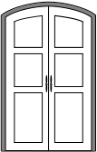
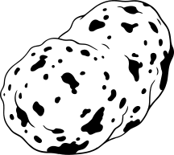
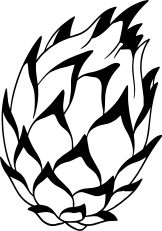
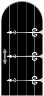
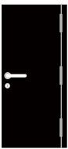
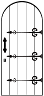
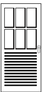
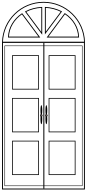
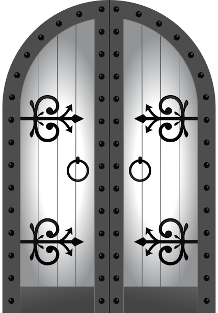
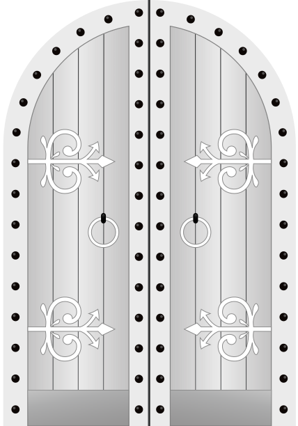

あなたは今、見知らぬ空間に横たわっている。
平衡感覚が狂っているせいなのか、横たわっているというのに世界がうねりを上げ、大きく回転している感覚が常にあなたを支配している。
徐々に覚醒する意識と共に、あなたはゆっくりと瞼を開いた。
――ここは、どこだろう？
あなたの身体は全身が酷く強張っており、身体を動かす度に悲鳴をあげる。
どれぐらい長い時間横になっていたのか、見当もつかない。
あなたは今、見知らぬ空間に横たわっている。
平衡感覚が狂っているせいなのか、横たわっているというのに世界がうねりを上げ、大きく回転している感覚が常にあなたを支配している。
徐々に覚醒する意識と共に、あなたはゆっくりと瞼を開いた。
――ここは、どこだろう？
あなたの身体は全身が酷く強張っており、身体を動かす度に悲鳴をあげる。
どれぐらい長い時間横になっていたのか、見当もつかない。
不気味な程静かで暗い部屋だ。
じめっと湿り気を帯びた堅牢な石造りの床と壁に、片腕を伸ばした先には身を横たえる質素なベッドがある。
正面には、太い金属製の棒の様な物が幾本も埋め込まれた障壁がある。
推測するに、ここはどうやら牢獄の様だ。
石造りの牢獄に何故自分がいるのか、全く心当たりがない。
そして、恐ろしい事に気が付く。
記憶が、ない――
焦燥感に駆られたあなたは、慌てて自身を探り始める。
白い五分袖のシャツにタイトなチノパン。シンプルなスニーカーという至って質素な恰好で、鞄などは特に身に着けていない。
髪は短めに切り揃えられ、眼鏡や腕時計など装身具の類は一切身に着けていない。
ふと、違和感を覚えチノパンのポケットをまさぐると固い何かが入っていた。
それはスマートフォンであった。
あなたは現在スマホと簡素な衣服以外、何も有していない事に気が付く。
大粒の冷たい汗が、頬を伝った。
周囲を観察すると、牢獄の壁はゴツゴツとした荒い石組みで出来ている事に気づく。
これが映画やゲームなら、主人公は易々と石壁を登り、天井の通気口などから脱出するものだ。
自分にも出来るかもしれない。
あなたは藁にもすがる思いで、壁の凹凸に指をかける。
爪先をわずかな窪みに引っかけて身体を数センチ押し上げてみたものの、指先にかかる体重に腕が悲鳴をあげ始める。
もし上っている途中で手が滑り、固い石の床へ落下したら骨折どころでは済まないだろう。
恐怖と疲労で膝が震え出し、あなたは壁を上る事を諦めた。
薄暗い灰色の闇が支配する牢獄であなたが唯一縋れる物、それはスマホただ一つであった。
暗闇の中ぼんやりと光る液晶画面にあなたは少し安堵し、画面に指を押し当てた。
指紋認証によりロックが解除され、スマホが立ち上がる。
何かしら自分の記憶に繋がる事柄があるかもしれない…
そんなあなたの期待を裏切るかのごとく、ホーム画面には殆ど何も無かった。
時刻表示もバッテリー表示も電波表示も通知も何も無く、真っ黒の画面の中央には、たった一つだけアプリアイコンが置かれている。
『へへっ、お目覚めでヤンスか』
アイコンをタップしたと同時に、妙に甲高い何者かの声が石牢に響いた。
周囲を見回すが、暗い牢獄の中には誰もいない。
『お困りのようでヤンスね』
声が近づいてくると同時に、小さな羽音が聞こえて来た。
あなたが暗闇にぼんやりと捉えたのは、自身に近づく小さな羽虫の姿であった。
――羽虫に、話しかけられている。
虫の声など判る筈もないのに、これは確実に目の前の羽虫が話しかけているのだと、あなたの直感は認知している。
薄暗い部屋の中、謎の羽虫と共に閉じ込められた自分。
突然の出来事にあなたは言葉を失い、立ちすくしている。
耳障りな羽音をたて、目の前の羽虫は八の字を書いて滑空しだす。
顔をかすめて滑空する羽虫の様子に、あなたはだんだんと不快感を覚えてきた。
『もしお困りなら、オイラがお助けするでヤンスよ？』
羽虫の声が耳元で響く。
妙にざらざらした甲高い響きに、あなたの苛立ちは増す一方だ。
『悪い話じゃないと思うスよ？』
羽虫はあなたの顔の前でホバリングしながら小さく囁く。
虫の羽音だけが静かに響くこの牢獄。今のあなたに出来る事は、目の前の羽虫の話を信じる以外に無さそうだ。
あなたは大きく頷き、羽虫を見た。
羽虫はスマホの液晶画面に止まると、前足をこすり合わせ始めた。
『オイラがあんたを助けるには、この光る板と合体する必要があるンス。
その為に…ほんのちょっとばかり欲しい物があるんスが、くれるでヤンス？』
『必要なのは、ほんのちょっとばかりの血』
羽虫はそう言うと、あなたの指先に静かに止まった。
直後、細いキリで突かれた様な鋭痛が身体を走る。その強い痛みにあなたは思わず手を引いてしまう。
持っていたスマホを落としそうになり、あなたは慌てて手を伸ばした。
しかしスマホは床に落ちる事なく、不思議な力で宙に浮いたままとなっている。
『あんたはオイラに力をくれた』
スマホと羽虫はぼんやりと光を放ち、共に宙を浮遊している。
そういうと羽虫はゆっくりとスマホ画面に吸い込まれていく。
『オイラがこれを使って、あんたをお助けするっス』
羽虫の姿は完全にスマホ画面に吸い込まれた。
『さあ、ここから脱出するでヤンス…』
羽虫の声はだんだんと小さくなり、やがて聞こえなくなった。
と、同時にスマホのアプリが起動した。
いくつかの表示とウィンドウが開き、先程までの無機質な画面からアプリが立ち上がった状態へと変化する。
≪女神のスマホを 手に入れた！≫
アプリが立ち上がり、無機質な効果音と共に画面へメッセージが表示された。
『私は、女神の使いです。これよりあなたを出口へとナビゲーションします』
女神のスマホ 機能説明
【1.マップ機能】
[🗺️ MAP] ボタンを押すと、現在のフロアを確認出来ます。
【2.体力の表示】
ハートマーク ♥♥♥は、あなたの生命力を表します。
【3.体力の補充】
体力が減った場合は、いつでも [＜補充＞] ボタンを押す事で全回復出来ます。
※こまめな回復をおすすめします
あなたは試しに＜補充＞ボタンを押してみた。
押すと同時に、それまでどこか気怠く重かった身体が少しスッキリした様な感覚を覚える。
スマホの説明通り、確かに体力が全回復した様だ。
あなたはまとわりつく羽虫を無視し、ベッドに腰かけた。
記憶の無い自分が今後どうしたらいいか考えるべく、瞳を閉じる。
と、急に激痛が腕に走った！
無視する事にした例の羽虫が、自分を刺したのである！
灼熱の焼き印を押しつけられた様な痛みにあなたは絶叫し、腕を振り回した！
やがて激しく耐えがたき痛みが全身を襲い、あなたは悶絶しながら壁に身体をぶつけ、そこらじゅうを転がり回り出す。
な ぜ ？ な ぜ ？ ナ ゼ ？
頭をぐるぐると回る疑念。しかし、この空間にあなたの問いかけに答える者は何一つ存在していない。
記憶を失い、正気をも失ったあなたの絶叫だけが牢獄内にむなしく響いた…
BAD END 狂気の彷徨人
あなたは今、暗闇に支配された石作りの牢獄にいる。
手元のスマホは掌の中でほのかに光り、この建物と思わしき場所の簡素な地図と、己の体力を表示している。
地図を見るに、現在あなたがいる石の牢獄は、どうやらこの建物の最上階に位置している様だ。
このまま牢獄に留まるか、脱出を試みるか。
あなたは行動を起こしてもいいし、留まってもいい。
カビ臭く質素で湿り気を帯びた、お世辞にも快適とは言い難い粗末なベッドだ。
窓も何もないフロアだが、部屋の隅には先端が光る木の棒が床の穴に刺さっており、ぼんやりと室内を照らしている。
あなたの知識ではその棒がどの様な技術で光っているのか、説明が出来ない。
寝転がったまま周囲を見ると、頑丈な鉄の枷が壁面に直接埋め込まれていた。
湿った重い空気が充満する牢獄の中で、鉄の枷は鋭い光を放ちその存在を強く主張している。
さっき刺された指の痛みと、記憶が無い事への不安。
そして今も続く平衡感覚の違和感で、あなたの身体は疲弊に悲鳴を上げている。
この先、どうやってこの牢獄を脱出したら良いのだろうか？
今の自分が出来る事は、状況を把握する事である。
部屋の正面には太い鉄柱が等間隔に並ぶ巨大な格子が立ち塞がっている。
鉄格子の中央には扉が据え付けられていた。
当然ながら、扉には堅牢な鍵が施されており、手で押してみてもびくともしない。
部屋の隅に刺さった光る木の棒を手に取ると、あなたは鉄格子を詳しく観察した。
目の前の鉄格子は、縦と横の鉄棒が幾重にも交差した格子状に組まれており、狭くて頭は通らない。
目の前の鉄格子の扉に手をかけてみた。
鉄格子の太さは、握って揺らすのにちょうど良い直径である。
力を込めて揺すってみる。不快な大きい金属音がフロア中に響いた！
己が置かれた理不尽な境遇に対する憤りに身を任せ、あなたは扉を揺すり続ける！
ガチャッ！ ガチャン！
※体力を 1 失った！＜♥を1つ 減らしてください＞
血豆が出来ても、あなたは扉を揺すり続けた。
激しい金属音が室内に鳴り響く。
掌が擦り切れ、血豆が潰れる。灼ける様な激痛が走っても、あなたは大声をあげながら、鉄格子を揺さぶる手を止められなかった。
今の自分に出来る悪あがきは、この扉を鳴らす以外にないからだ。
ガチャッ！ ガチャン！
※体力を 1 失った！＜♥を1つ 減らしてください＞
――何十回めの揺さぶりののち、あなたの耳は小さな変化を捉えた。
自分が奏でる音と、別の音が遠くから聞こえてきたではないか。
その音の主は果たして幸運の担い手か、それとも凶兆か…
「――ねぇ！やっぱり何か聞こえるわっ！」
「――そうかぁ？」
暗闇に飲まれている通路の彼方から、かすかに声が聞こえてきた。ハキハキした女性の声と、少年とおぼしき声だ。
あなたは扉を再び揺すって金属音を発し、声の主らに自分の存在をアピールする。
「こっち！こっちよ！」
パタパタと駆ける足音と、響く声。やがて闇を切り裂き、あなたの目の前に二人の人物が現れた。
「ほらぁ！やっぱり誰かいたじゃない！」
「本当だ」
鉄格子を挟んで、あなたの目の前に二人の人物が立ち並んだ。
あなたの目に映る両人は、いわゆるファンタジー世界の職業である女戦士や魔法使いに見える。
眼前に並び立つ両人は、自分とは全く違なる様相をしていた。
一人は、すらりとした長身と美しい姿勢が目を引く少女で、もう一人は少年の様である。
長い金髪をなびかせる少女は、真紅の軽鎧を纏い、手には細身の長剣を携えている。
隣の少年はつば広の三角帽と、厚手で深緑のマントを身に着け、手には長い杖を持っている。
「あなた、悪い人？」
軽く首をかしげた金髪の女戦士が、あなたに声をかける。
大きく手を振り、自分は悪人ではないと主張するあなたを見て、女戦士はにっこりと笑った。
「…ねぇ、これ壊せる？」
「うーん…どうかな」
女戦士は、隣に立つ少年魔法使いに声をかけた。少年魔法使いは帽子の影からしげしげと鉄格子を眺める。
「焼き壊す方が早いけど、危ないかもな」
「魔法かけてもらったら、私、切れるけど？」
二人は何やら相談を始めた。
漏れ聞こえる会話を聞くに、どうやら鉄格子を破壊してここから出してくれるつもりの様だ。
「下がって！」
少年魔法使いは、隣に並び立つ少女とあなたに警告を発した。
その声に促されたあなたは、牢獄の一番奥へと急いで移動する。
少年が構えた杖が眩しい光を放つと、何もない空間に突如として大きな火球が現れた。
「――ファイヤボール！」
杖の先端から放たれた灼熱の火球は、鉄格子へと向けられた。
浮遊する巨大な熱の塊はゆっくりと鉄格子を侵食し、大きな穴を穿つ。
と、同時に牢獄内に煙が発生し、身を焦がす様な強い熱と風がたちまち牢獄に満ち、瞬時にあなたを襲った！
※体力を 1 失った！＜♥を1つ 減らしてください＞
「出て！」
少年魔法使いが伸べる手を掴む為、あなたは焼けただれた鉄格子の穴を突っ切り、牢獄の外へと跳び出した！
「行くわよーっ！」
少女は長剣を構えた。それと同時に少年が杖を天に向けると杖が光を放つ。
少年が輝く杖を少女へ向けると、煌めく赤い輝きが少女の身体を包みこんだ。
大きく息を吸った少女が、姿勢を整える。
「――ハアッ！」
輝きを纏った少女が掛け声と共に長剣を振りかぶり、鉄格子を素早く二度薙ぐ。
同時に鋭い光が牢獄を走り、斜めに切られた鉄格子が激しい音を立て、石床に落ちた。
「これで出られるわねっ！」
剣を収めた少女はあなたに手を差し伸べると、ウィンクを投げかけた。
幾本の太い鉄格子をいともたやすく切断する少女の剣技とパワーにあなたは感嘆のため息を発し、牢獄を脱した。
あなたは暗く湿ったベッドに横たわる事にした。
暗闇に覆われた高い天井は、いくら目を凝らしても頂点は窺い知る事は出来ない。
――一切、何も思いつかない。
あなたは今、自分がいかに無力で非力で凡庸な人間である事を痛感している。
牢獄を脱出する方法など何一つ思い浮かばず、自分の荒い息のみが聞こえる沈黙の空間。
このまま丸まってやり過ごすしかなさそうだ。
やがて、意識が遠のいていく。
――何も出来ない、囚われの存在。
記憶を失い、やる気も生気をも失ってしまい、あなたは諦めの気持ちでその瞼を閉じた…
BAD END 喪心の眠り人
あなたは石造りの牢獄を脱し、二人の人物の前に立っている。
最上階のフロアは驚く程狭く、あなたが閉じ込められていた牢獄と、その前に伸びる長い廊下、そして下り階段があるだけだ。
真紅の女戦士と、深緑の少年魔法使い。
ゲームや映画で見る様な人物が目の前に実在してその強大なる力を誇示した事実に、あなたは言葉を失っている。
「とりあえず、下に行きましょうか」
女戦士が、牢獄の前を伸びる廊下を歩き始めた。
長い金髪を揺らしながら軽快に闊歩するその雄姿につられ、あなたも歩みを進める。
少年魔法使いの杖からは小さな光が放たれており、行く先を照らしているので歩行に支障はない。
階下へ向かう道すがら、あなたは考え込む。この二人は一体何者なのだろうか？
牢獄のあった最上階から一個下った先は、少し開けた広間になっていた。
立てかけられた槍の様な武具、幾脚かのテーブルと椅子、木製の樽や木箱が散乱しており、さながら兵士の詰め所といった様相だ。
石壁に窓はなく、部屋には扉が一つ存在している。
少女と少年は各々椅子に腰かけると、あなたにも座る様に促した。
椅子に腰かけたあなたは、二人に軽く自己紹介を行った。
記憶が無い事。何故ここにいるか判らない事。何も持っていない事。
一通りあなたが話を終えると、少年が口を開いた。
「どうやらあんたは、ぼくらとは違う世界の人っぽいな」
少年はあなたをつぶさに観察し、話を続ける。
「…そしてぼくらも、ここに飛ばされてきたクチなんだ」
「そうなのよ！私達街に帰る所だったんだけど、何か世界がぐわーんってなって、気づいたらここにいたのよ」
間髪入れず、少女が口を開く。
少年は帽子を軽く整えると、あなたへと向き直った。
「…心当たりはあるんだ。たぶんこの世界のあるアイテムが、たぶんあんたの世界に干渉して、不運にもあんたを巻き込んだんだろう。
誰かがこの世界を象った魔法の儀…世界儀をいじったか、もしくは世界儀が暴発したか」
少女は姿勢を整えると、真摯な眼差しをあなたに向けた。
「…ごめんなさい。私達の世界が、あなたを巻き込んでしまったみたいね。
今はどうしたらいいのかわからないけれど、まずはこの建物を脱出しましょうか」
少女は明るい笑みを浮かべ、あなたに手を伸べて来た。
「そうと決まったらしばらくの間あなたは私達の仲間よ！よろしくね」
あなたは差し出された少女の手を握り、硬く握手を交わした。
思いのほか華奢な手に、あなたはほんの少し驚く。
先程鉄格子を切断した剣士の手とは思えない程、少女の掌は小さな印象を受けた。
「そうだ、自己紹介しないと。私は、マ…」
「おっと、ちょっと待った！」
少年が静かに少女を制する。
「なんなのよいったい！せっかく良い雰囲気だっていうのに」
「…冒険者はこういう時、真の名を名乗らないものなんだぜ」
少年はあなたに訝しげな表情を向けた。
まだお前を信用していない。そう言いたげな面持ちである。
「もうっ！疑い深いんだからぁ。じゃぁ私は…マティア！マティアよ！宜しくね！」
「ぼくは…そうだなぁ…ヴィール。ヴィールって名乗ろうかな」
「ヴぃーるぅ？なにそれ、かっこつけちゃってぇ」
「うるさいなぁ！君だって大してひねりがない名前じゃないか！」
真紅の女戦士－マティア－と深緑の少年魔法使い－ヴィール。
じゃれあう子犬の様な二人のやりとりに、あなたの唇に笑みが零れた。
少女が差し出した手を見て、あなたは一瞬躊躇った後、首を横に振った。
突然巻き込まれた見知らぬ世界、見知らぬ者達。
どんなに彼女らが気さくで助けてくれた恩人だとしても、見ず知らずの相手に心を許せる余裕は今のあなたには無い。
「…っと、そうよね。いきなりこんなところに放り出されて、信用しろって方が無理よねぇ」
あなたのその警戒した態度に、少女は少しだけ目を丸くすると気まずそうに頭を掻き、出した手を残念そうに引っ込めて苦笑する。
だがその隣で、深くかぶった帽子の影から、少年が小さくつぶやいた。
「賢明だな」
少年はテーブルに頬をついたまま、少しだけ口角を上げた。
「訳も分からず転移させられて、怪しいやつに言われるがまま握手する様なお人好しではないってことか」
少年なりの最大級の賛辞なのか、少年はそれ以上何も言わず、ただ頼もしい視線をあなたに向けた。
「ぼくは………ヴィールだ」
「ヴぃーるぅ？なによそれ」
「…冒険者はこういう時、真の名を名乗らないものなんだぜ」
「ふーん」
「君は…んー…マティアでどうだい？」
「マティア、ねぇ…まぁ、悪くないかなっ」
まんざらでもないとでも言いたげな表情で、真紅の女戦士－マティア－が深緑の少年魔法使い－ヴィール－を見る。
二人の仲睦まじい関係性に、あなたの唇に笑みが零れた。
「さてこれからだけど…まずはこの建物の出口を見つけましょうか？」
「ぼくもそれに賛成だ。あんたは？」
あなたは先程入手したスマホをポケットから取り出すと、建物の地図を見るべく操作を始めた。
その光景に、二人の目が見開かれる。
「なにそれ？」
スマホが物珍しいのか、マティアの目はスマホ画面をスワイプして操作するあなたにくぎ付け状態である。
と、ヴィールがスマホ画面をのぞき込んできた。
「魔力を感じる…これは、光の女神様の力だ」
あなたは二人にスマホの入手経緯を説明した。
牢獄で目を覚ましたら謎の羽虫に話しかけられ、刺されたのちに羽虫がスマホと合体した事。
そののちに、スマホが変化して地図や体力が表示された事。
そして、実際に体力が回復した事などだ。
「女神の存在は冒険で知ってはいるけれど…それじゃあこれは、女神様のアイテムって事？」
「どっちにしてもただのアイテムじゃないね、それは」
あなたはスマホ画面を操作し、建物の地図を見せた。
簡易的な地図ではあるが、牢獄のある階、今あなた達がいるフロア、そして階下が表記されている。
地図上に出口など文字の表記はないが、推測するに今は3階にいる様だ。
「こうして地図が見られるのは、実にありがたいな」
「そうね！これがあれば早く出られるわね！スバラッキー☆」
マティアは嬉しそうに指をパチンと鳴らすと、勢いよく立ち上がった。
「そうと決まれば、早速出発よっ！」
あなた達は現在、建物の3階にある兵士の詰め所にいる。
背後には牢獄から降りてきた階段。前方には扉が一か所あり、この扉を出ると廊下に出られる様だ。
スマホの地図上ではこの階には二つの部屋があり、一本の渡り廊下で結ばれたシンプルな構造になっている。
詰所奥の階段を上り、あなた達は牢獄のある最上階へと戻った。
牢獄の扉はマティア達の力で破壊されている。
「ねぇ、何か忘れ物？」
マティアは牢獄を見るあなたを不思議そうな顔で見ている。
「壊した扉をもう一度見たかったのかい？」
あなたの背後でヴィールが少し不機嫌そうな声を漏らす。
これ以上、ここに特に用事は無い。
あなたは牢獄内をチェックし、何も変化が起きてない事を確認したかった旨を伝え、マティア達と共に階下の詰め所へと戻った。
「さあ、行きましょうか」
閂を外したマティアは力をこめ、扉を開いた。
風圧が流れ込み、風がマティアの髪を大きくなびかせた。
あなた達は詰所をあとにし、廊下を歩き始める。
マティアを先頭、あなたは二番手。後続はヴィールといった順だ。
足音だけが響く、湿り気を帯びた静かな廊下を歩くあなた達。
前方のマティアはご機嫌な様子で廊下を闊歩していく。
彼女の背に背負われた長剣が無ければ、この少女が鉄格子を切断する様な戦士には到底見えない。
廊下は思っていたよりも長く、堅牢な造りをしていた。
床と壁には同じ材質の石が積まれ、窓の類は相変わらず一切ない。
廊下の壁には、牢獄や詰所にもあった先端が光る木の棒が等間隔で設置されており、灯りには困らない。
と、廊下の中程を過ぎた辺りで、マティアが歩みを止めた。
「もし何かが起きたり、襲われたり、困り事が起きても」
マティアは振り返って、あなたに笑みを投げかけた。
「あなたは私達が守るから」
太陽の日差しの様なその明るい微笑に、あなたの胸に安堵が広がった。
マティアがあなたの顔をのぞきこんだ。
「あら？顔色が良くないわ。もう少しさっきの部屋で休んでから行きましょうか」
あなた達は、詰所へと戻った。
あなたは二人の好意に甘え、椅子に腰かけると大きく息をついた。
マティアが心配そうな面持ちであなたを見つめる。
「転移って、魔力がないと辛いもんな」
「え？私は平気だったけど？」
「マティアは…その…ほら、人一倍丈夫だから」
「なによー！」
確かに、体調はまだ万全とはいえない。
二人に守ってもらえるという安心感はあるが、念には念を入れここで体調を整える事にする。
数刻の後、あなた達は再び詰所をあとにし、廊下を渡って次の部屋へと向かった。

廊下の突き当りにしつらえられた木製の黒い扉をマティアが押し開く。
その奥の室内は真っ暗で、廊下の灯りで足下だけがぼんやりと見える。
全員が室内に入った瞬間――
あなたの視界はサイケデリックな極彩色の光に染まった。
「……え？」
マティアの気の抜けた声に続き、あなたはゆっくり瞼を開き、広がる光景に息を呑んだ。
そこに広がっていたのは、石の小部屋でも廊下でもなく、頭上をうっそうとした葉が覆い隠す、見知らぬ深い森林だった。
むせ返る様な土の匂い、草木の青臭さ、そして繁る木々から零れる日差し。
これらは全て本物であると、あなたの本能は直感で認知している。
「扉がないわ！」
マティアの悲鳴に、あなたは慌てて振り返った。
先程くぐった黒い木扉も、石の壁すらも跡形もなく消え去り、そこにあるのはただ気味の悪い木立ばかりになっていた。
「魔力で探ってみる」
ヴィールは持っていた杖に手をかざした。杖がふわりと浮かび、幾本の淡い光が先端からほとばしる。
「わかったわ！この人は任せて」
力強いマティアの声に、あなたの身体を支配していた不安が少し薄れた気がした。
――次の瞬間、スマホから警告音が鳴り響いた。
――ビィーッ！ ビィーッ！――
突然の警告音に身をすくめながらも、武器も知識もないあなたに出来る事など何一つない。
あなたはただ息を殺してマティアの背中を見守るしかなかった。
と、マティアがピクリと耳を動かし、息を呑んだ。瞬時に身をかがめ、背負っていた長剣の柄に手をかける。
「下がって！」
マティアの強声とほぼ同時に、頭上の枝葉が激しく揺れた。
不気味な咆哮と共に、歪な姿のモンスターが飛びかかってきた！
周囲に退路はなく、ヴィールは魔力探知中で動けない。
あなたが今頼れるのは、目の前で剣を構えたマティアだけだ。
目の前の猛獣は長い長毛に覆われた胴体を持ち、歪な二つの首がもたげている。
一方は毛に覆われた猛獣の頭部、もう一方はそれとは全く質感を異にする鱗に覆われた長い鎌首だ。
二つの頭はそれぞれの意思を持つかのごとく、眼前の獲物であるあなた達を凝視している。
マティアの剣が鋭く舞い踊り、狂乱のキメラに大きな裂傷を与えた！
猛獣は流れ出す体液とその痛みに悲鳴を上げながら、大きく後退する。
目の前の猛獣に負けじと剣を振るうマティアの足手まといにならぬ様、あなたは太めの木立にそっと身を隠した。
キメラはマティアを激しく威嚇し、巨大な爪を振るう。
マティアはキメラの猛攻を軽やかにかわしながら戦闘を続けている。
「マティアっ！」
背後からヴィールの強い声が、空気を切り裂く様に響いた。
その声に反応したマティアが急いで水平に飛びのく。
と、同時に、あなたの背後の木立から巨大な熱の塊が大きな音と共にキメラへと放たれた！
ヴィールの火の魔法だ！
狂乱のキメラは、瞬く間に巨大な炎に包まれた！
逃れようと暴れるキメラの皮膚や毛皮を、ヴィールの炎は決して逃がさない。
高熱の炎は容赦なく肉を侵食し、内側からキメラの身を焼き尽くしていく。
己を包んで離さない炎の執拗な攻撃に、キメラはつんざく様な悲鳴をあげその場に崩れ落ちる。
漂う熱気と臭気。ほどなく獣は黒い消し炭へとその身を変えた。
「ねえ…これ、モンスター、なの？」
マティアは倒れた猛獣の屍を見ながら、追いついたヴィールに声をかけた。
二人は目の前で燻る猛獣の残滓を見ながら首をかしげている。
「王国のモンスターとは違うな…」
「こんなの見た事ないわ」
「なんにしろ、この先は少し用心して行こう」
あなたは猛る猛獣を思い出し、恐怖に身を振るわせた。
「あ、大丈夫？怪我しちゃった？」
「治療しようか？」
あなたの様子に気づき、二人が振り返った。
これが熟練の冒険者の余裕という物だろうか。二人は汗一つかいていない。
マティアは沈んだ面持ちで亡骸を見ている。
「私達の世界にはモンスターがいるんだけど、全然こんな感じじゃないの。造られた魔物というか…んー…倒したり、魔法で燃やしたりすると結晶になるの。普通の生き物みたいに肉があったり、燃えたりはしない」
長いまつ毛が小刻みに震え、揺らぐ心を伝えている。
「こいつは何か、生き物が混じった感じだな」
帽子のつばに隠れてはいるが、ヴィールの瞳も曇っている。
「空間が歪んでそのせいで混じった…一度混じってしまったら…その生き物は元には戻れないだろうな。生き物と生き物が…思いも考えも魂も…それってきっと、結構つらいだろうね」
「そんな…ひどいわっ！そんなのって、ひどい！」
マティアが悲痛な声をあげた。
あなたは二人に、この森林から出る事を提案した。
しかし、その方法は思いつかない。
頼りのスマホに変化はなく、画面には体力ゲージと地図のアイコンがあるだけだ。
周囲を見回す。
うっそうと茂る薄暗い森林は先を見通せない程、木々が生い茂っている。
どちらへ向かうのが正解なのか、どこへ行けばいいのか。
やみくもに動けばまたあの猛獣の様な存在に襲われるかもしれない。
今のあなた達には、絶望的に指標がない状態だ。
さっき襲われた恐怖がまだ身体を支配しており、肌が総毛立つ様な緊張が続いていた。
あなたは大きく息を吐くと、その場に座り込んだ。
「ねえ、ヴィール。歪んだ世界って、直せないの？」
「…魔法の世界儀がこの空間を歪ませ、この人を呼んだ。たぶん『鍵』はこの人な気がする」
鍵。
ヴィールはその単語を強い声音で発した。あなたにもはっきり伝わる様に。
「さっき魔力でこの空間を探知してわかったんだけど、ここが建物の中なのは間違いない。
建物に満ちていた魔力の質と、この空間は同じだったからね。
空間が歪んでこの森林へと変貌したっていえば、伝わるかな？」
マティアや自分に判る様、ヴィールは身振り手振りを交え、言葉を選びながら話している。
「森林になってしまったけれど、部屋の構造はそのまま。地図が正しいのならば、入って来た入り口と反対側にきっと出口はある筈だ。
魔力の流れに沿ってこの人を建物の出口に連れて行けば、空間が正しく繋がるんじゃないかとぼくは思う」
「どういうこと？」
「この人はぼくらと違う世界からここに交じってきてしまった存在だ。
建物からしたら、排除したい異物なんだよ、きっと。
だから正しく導いて、建物から出してやればいい…そんな気がするんだ」
ヴィールは顔をあげて、真っすぐあなたを見た。
「異国から来たお客人を建物から出す、ねぇ…」
マティアはウィンクと共に、ヴィールの肩を軽く小突いた。
「わかったわ、ヴィール。あなたの勘に従うわ！」
あなたは今、二人と共に狂乱のキメラを撃滅した跡地にいる。
激しい戦闘の余波で足元を覆っていた筈の雑草はことごとくなぎ倒され、平たく整地されている。
くすぶる炭と化してもなお、キメラの消し炭からは煙が立ち上り、熱を発し続けている。
灰が舞うこの場所は、深く鬱蒼とした森林の中で踊り場の様な役割を果たしている。
「どっちへ行こうかしら」
マティアは目を細め、景色を観察している。
周囲は背の低い樹木と草木が茂る森林。目の前の木々はうっそうと繁り、先を窺い知る事は出来ない。
ヴィールは杖をかざし、周囲の様子を引き続き探っている。
前方の草むらは比較的草木が少なく、分け入る事が出来そうである。
あなたの左方向からは木立を抜ける風が吹き抜け、マティアの髪を揺らしている。
あなたは二人と共にキメラを撃滅した跡地にいる。
前方の草むらは比較的草木が少なく、分け入る事が出来そうである。
あなたの左方向からは木立を抜ける風が吹き抜け、マティアの髪を揺らしている。
あなた達は目の前にわずかに開けた草むらに足を踏み入れた。
だが、そこに広がっていたのは道ではなく、刃物の様に鋭い葉を持つ下草の群れだった。
生い茂る葉をかきわけて進もうとした瞬間、鋭い痛みがあなたの腕を襲う。
冒険者の二人と違い武具を身につけていない為、あなたの柔らかい皮膚は簡単に切り裂かれてしまう。
鋭く毒をもった葉のせいで、腕が赤くかぶれ、体力が奪われる。
※体力を 1 失った！＜♥を1つ 減らしてください＞
「っ……！ なんなのこの草……！」
あなたの腕を覆うかぶれを見てマティアが息を呑む。
流れる血とヒリヒリと広がるかぶれの痛みに耐えながら、あなたはようやく草むらを抜け出した。
あなた達は下草の群れを迂回し、繁みへと避難した。
ヴィールがかぶれを癒してくれるという。
腕の手当を受けている間、マティアは、長剣を振るいながら来た道を戻っていく。
あなたを心配したマティアが、下草を長剣で薙ぎ払っているのだ。
「マティアはね、ああ見えて結構優しい所があるんだ」
あなたの腕を治療しながら、ヴィールがあなたにそっと耳打ちする。
マティアの剣技のおかげで、あなたはこれ以上腕をかぶれさせる事なく先へ進む事が出来る。
「❖ 02を チェックしてください」
目の前にはわずかに開けた草むらが広がっている。
ここは先程マティアが下草を長剣で薙ぎ払った為、あなたの腕が再びかぶれて傷つく事はない。
あなたは再び怪我する事なく、無事に草むらを抜け出した。
草むらを抜け出ると、視界が急に開け、心地良い風が吹き抜ける小高い草原へとたどり着いた。
見渡す限り不穏な気配はなく、しばし緊張を緩めても大丈夫そうな場所だ。
あなたの右手には、色とりどりの草木が賑やかに生い茂る斜面が広がっている。
左手には、背の高い木々が深く鬱蒼と密集した繁みが見える。
そして正面の先には、どんよりとした気が漂う澱んだ沼見える。
茂みの奥へと足を踏み入れると、大きな樹木の足元に小さな鳥の巣が落ちているのが目に入った。
中には、まだ羽も生え揃っていない小さなヒナ達が、不安そうに鳴き声を上げている。
どうやら強い風で枝から落ちてしまった様だ。
「あら大変」
マティアはそう呟くやいなや、長剣の鞘を足元に外して置くと、躊躇なく大木の幹に手をかけた。
甲冑や防具を身につけているとは思えない程軽やかな身こなしで、スルスルと登っていく。
「マティアなら大丈夫だよ。木登り得意だから」
あ然として見上げるあなたに、ヴィールが当然といった様子で静かに耳打ちする。
あっという間に頭上の太い枝まで辿り着いたマティアは、見事に鳥の巣を置き直してみせた。
「これで親鳥が戻ってきても安心ね！」
枝の上で嬉しそうに微笑む彼女の姿に、あなたは冒険者としての圧倒的な身体能力と、その温かい人柄に改めて感心するのだった。
草原を後にし、あなた達は正面の沼地へと足を進める。
生い茂る草木をかき分けて歩いていくと、辺りの空気からは草原の清涼さが消え、徐々に不穏な湿り気を帯び始めた。
だんだんぬかるむ足下。そしてお世辞にも香しいとは言えない沼の臭いがあなたの鼻腔に満ちる。
うっそうとした森林を抜けたあなた達の目前に、澱んだ沼が現れた。
薄暗く底が深そうな巨大な沼を目の当たりにし、あなた達は思わず顔を見合わせる。
特にこの沼に用事はない。
あなた達は来た道を戻る事にする。
草木が賑やかに生い茂る斜面へ出ると、頭上の高い枝に風変わりな果実がいくつか実っているのが見えた。
「見て！あれ、美味しいのよ！」
マティアは目を輝かせると、長剣を置き、傾斜のきつい斜面をまるで平地の様に一気に駆け上った。
そのまま太い樹木へと飛び移り、生い茂るつるを軽やかに掴んで、振り子の様に枝から枝へ飛び移っていく。
華麗なる身のこなしで、マティアはあっという間に二つの果実を摘み取り、斜面を駆け下りてきた。
「はい、どうぞ！どっちがいい？」


マティアが差し出した手の上には、どう見てもまともな食べ物には見えない二つの果実があった。
「…どっちもこの世界ではお馴染みの果実だよ」
ヴィールはあなたにそっと耳打ちした。
果皮を噛んだ瞬間、強烈に甘酸っぱく、粘り気のある果汁が口いっぱいに広がる。
その筆舌に耐えがたい不快感に悶絶するあなたを見て、マティアが驚き困惑した面持ちであなたに水筒を差し出す。
「えっ、嘘でしょう？美味しくなかった？ゴメン！」
「――水分と糖分は豊富なんだけどね」
ヴィールが淡々と冷静な分析を入れるが、どうもあなたの口には合わない様だ…
「こんなに美味しいのに」
そういうとマティアは自分の分を口へ運び、不思議そうに首を傾げた。
※あまりの不味さで体力を 1 失った！＜♥を1つ 減らしてください＞
果実の硬いトゲの皮を剥くと、中から灰色の果肉が姿を現した。
一抹の不安を覚えながら果肉を口に入れた途端、猛烈な渋みとえぐみがあなたの舌を襲う！
「この渋みがクセになるのよねぇ」
涙目になって咳き込むあなたを、ヴィールが心配そうに覗き込む。
マティアは自分の分の果肉を美味しそうに頬ばっている。
「――この果実には強いアクが含まれてる。無理しないでいい」
文化と味覚の違いを痛感しながら、あなたは必死に唾液を飲み込んだ…
※猛烈な渋みで体力を 1 失った！＜♥を1つ 減らしてください＞
ヴィールがぬかるむ沼の岸辺へと静かに歩みを進め、杖を高く掲げた。
苦悶の蟲樹の残骸からこぼれ出た玉が杖の輝きに呼応し、ほのかに発光する。
玉からあふれ出た光の筋は、まるで生き物の様に杖の先へと吸い込まれ、次の瞬間強烈な波状の光環となって解き放たれた！
「えっ、すごい！」
マティアの驚きと同調する様に、周囲の重苦しい雰囲気が一変した。
溜まっていた汚水がまるで命を得たかの様に猛烈に泡立ち、地鳴りの様な重低音と共に巨大な大渦を生み出していく。
泥水と腐臭を孕んだ水塊は、空洞となった中央の闇へ一気に吸い込まれていった。
ぬかるんでいた沼地は一瞬にして乾き、ひび割れを大地に刻んでいく。
つい数秒前まで漂っていた腐臭は嘘の様に消え去り、代わりに乾ききった荒野の臭いが辺りを満たす。
世界の理を無視したその光景に、あなたは息を呑む。
さっきまで巨大な沼だった場所は、一滴の水分すら残らない乾いた荒野へと変貌し、その中央にぽっかりと漆黒の大穴が出現した。
沼の中央に突如生じた大穴の縁に、あなた達は佇んでいる。
まるで初めから沼などなかったかの様に泥の平地は急激に干からび、無機質な荒野へと変貌を遂げた。
自分の知らない世界の理。一瞬で歪む空間。
瞬く間に出現した、底が窺い知れない大きな穴に、あなたは言い知れぬ不安を覚える。
「歪みの影響？しっかし、派手よねぇ」
マティアは大穴の周囲を歩き、楽し気に大穴を観察している。
足でも滑らせて落ちたらどうするのだろう。
と、ヴィールは並び立つあなたに声をかけた。
「ぼくの魔力探知によると、この大穴の先が空間への出口らしい」
ヴィールは不安げなあなたを見て、ふいに優しい笑顔を向けた。
「――怖い？」
あなたはヴィールの問いに大きく頷いた。
自分は手練れの冒険者である彼らと違い、何も出来ない非力な存在だ。
下草に皮膚を撫でられれば容易に傷ついてしまうし、襲い来る猛獣からは逃げるのが精一杯。
こうして突如現れた謎の大穴に対しても、畏怖の念で足がすくんでしまっている。
「マティアが守るって言ったから、ぼくも必ずあなたを守る。安心して」
夜霧のごとく静かに囁くヴィールの声は、戸惑い騒めくあなたの心に不思議と響いた。
あなたは怯える心を隠し、大丈夫だと言いたげに首を横に振った。
だが本当は心身共に限界が近かった。
下草に切り裂かれた腕の痛み、死闘の残韻で跳ね上がった心拍の激しい鼓動、そして足取りを重くする疲労。
それでも自分を守り、導いてくれている二人の足を引っ張りたくはなかった。
申し訳なさと焦りから、あなたは強く拳を握りしめ、怯えを必死で押し殺す。
その過剰な緊張を、ヴィールは見逃さなかった。
彼はあなたの両肩に静かにそっと手を置くと優しく囁いた。
「大丈夫。ぼくらがいる」
日に焼けて火照る身体に当てられる氷嚢の様に、ヴィールの掌から伝わる冷ややかな体温が、あなたの心身をゆっくり冷ましていく。
あなたは身体の強張りが、ふっと和らいだのを感じた。
「マティアーっ！大穴に入ろう！」
ヴィールは嬉々として大穴を調べる対岸のマティアに声をかけた。
その声を聴いたマティアは、早足で戻ってきた。
「ここに入るっていうの？」
マティアが、広がる大穴を指差す。
「ああ。ぼくの探知によると、ここに入るしかない」
「そう！わかったわ！」
マティアはあっさり承諾すると、その場で屈伸を始めた。
「私が先に行くわ！ヴィール、その人をよろしくね！」
マティアは鞘から長剣を抜くと、どこか楽し気な笑みを浮かべ、ためらう事なく大穴と跳躍した。
たなびく金の髪が流星の軌跡の様に尾を引き、闇へと吸い込まれていく。
あなたはそのあまりに無鉄砲で迷いのない行動に、開いた口が塞がらない。
「大丈夫。マティアのパワーは、今も感じられてる」
マティアの安否を慮り、固まっているあなたを察して、ヴィールが静かに声をかける。
ヴィールはあなたの肩へそっと手を添えると、暗闇を見つめたまま優しく微笑んだ。
「さあ、ぼくらも行こう。マティアは短気なんだ」
木立の隙間を抜けると、先程までの重苦しい密林が嘘の様に視界が開けた。
風の吹き抜けてきた方向には、青く柔らかそうな草地がどこまでも広がっている。
草地が続くその先、地平線の向こうには不気味な暗雲が立ち込め、空全体がどんよりとした曇天模様に覆われている。
さらに目を凝らせば、青草の合間には大小さまざまな沼地が斑点の様にいくつも潜んでおり、水面が鈍い光を反射している。
この先は先程、苦悶の蟲樹を撃滅した沼地へと続いている。
ヴィールの探知の結果、この先にはもうあなた達の興味を引く物は存在しない様だ。
あなた達はここを後にして、キメラを撃滅した跡地に戻る事にする。
「あっちから強い魔力を感じる。何かがいるみたいだ」
ヴィールが低く囁き、警戒する様に手にした杖を強く握り直した。
どうやら、この沼地の奥を目指すしかなさそうだ。
このまま草地をまっすぐ突き進めば、無数の小さな沼に足を捕られるかもしれない。
しかし大きく迂回すれば、危険な沼地を避けて進めるかもしれない。
あなた達は無数の小さな沼を避ける様にして、迂回路を選択した。
先へ進むにつれて、木々の幹は黒く爛れ、葉を落とした枯れ木が目立ち始める。
枝からは灰色の苔が幽霊の衣の様に垂れ下がり、足元の土は泥状へと変わり始めていく。
踏み下ろすたびに足は沈み込み、湿った土とカビの混じった不快な臭いが立ち上る。
「ねえ、本当にこのまま進む？」
先を行くマティアが不安そうに振り返った。
あなたも幾ばくかの不安を覚えている。
不安を押し殺して一歩を踏み出した瞬間、あなたは足を捕られ背中から倒れてしまった。
迂回路に見えていたのは、表面だけが浅く乾いた底なし沼だったのだ。
「きゃっ！」
すぐ横でマティアの悲鳴が上がったが、彼女は瞬時に身をひるがえし、近くにあった太い枯れ木へと飛び移った。
冒険者ならではの驚異的な身軽さと反射神経で、難なく回避してみせる。
泥はまるで意思を持つ生き物の様にあなたへまとわりつく。
足掻けば足掻く程、身体は深く沈み込んでいく。
「動かないで！」
マティアが焦燥の声を上げた。
ヴィールもあなたへ向かって必死に杖を差し伸べている。
だが、既に胸の高さまで泥に埋まってしまったあなたの身体は重く、程なくして底知れぬ暗闇へと引きずり込まれてしまった。
BAD END 泥濘の墓標
前方に広がる沼地には、突き出た立ち枯木が幾本も見え隠れしている。
泡の弾ける不気味な音が不規則に響き、水面には油の様な膜がゆらゆらと浮いている。
マティアは周囲を警戒しながら歩みを進めており、ヴィールもあなたの背後をしっかりと守りながら帯同している。
「魔力の気配が強くなった。このまま行けばきっと出くわす。準備はいいかい？」
ヴィールが声量を抑えながら警告した。
あなた達は、周囲一面が臭気に満ちた広大な沼地に辿り着いた。
沼地へ一歩足を踏み入れた瞬間、ねっとりとした悪臭が鼻腔を襲う。
「なんなのよ、ここはっ」
マティアは強烈な臭気に思わず顔を顰めた。
色彩を奪われたかの様な灰色の世界が、眼前に広がっている。
ぬかるんだ沼地からは臭気を帯びた泡があちこちで弾け、獣の牙の様な鋭く尖った岩肌が幾本も湖面へ突き出ている。
黒く折れた幾本もの枯れ枝は、まるで溺れる者が伸ばす腕の様に空へと伸びている。
そんな禍々しい景色の中心に、一際異彩を放つ巨木がそびえ立っていた。
幹は黒く焦げた様に爛れ、葉の一枚すらつけていない。
その樹皮は不自然に歪んでおり、まるで無数の節足動物の脚部が折り畳まれたかの様な風貌をしている。
「あの樹から強い魔力を感じる。ただの樹じゃないね」
ヴィールが声のトーンを落とし、手にした杖を構える。
その巨木の周囲だけ、沼の泡立ちと悪臭が一層激しく渦巻いていた。
あなた達は沼地の泥に苦戦しながらも、慎重に距離を詰めていく。
遠目には枯れ果てた巨大な樹に見えていたそれは、近づくにつれて異様さを増していく。
黒く太い幹だと思っていた物は、不気味な甲殻に覆われた節足動物の巨大な胴体であり、枝の様に見えていたそれは、折りたたまれた無数の脚と巨大な鎌だった。
空間を割る様な甲高い咆哮が響き渡り、蟲樹の巨大な鎌枝が一斉に振り上げられる。
痛みの苦悶を撒き散らす様に、鎌枝はしきりに空を切っている。
あなたはその樹木の正体に気づき、小さな悲鳴をあげた。
色を失った黒褐色の巨木。その肉体を巨木へと変化させられたカマキリの怒りは、目の前の非力な生き物達へ向けられている。
粘度の高い唾液が蟲の口から沼へ滴り落ち、臭気と蒸気をまき散らす。
巨大な蛍光色の複眼は、あなた達を捉えて離さない。
身を隠す場所がない広大な沼地。
ヴィールは巨木から放たれる棘からあなたを守るべく、沢山の火弾を操っている。
マティアはあなたと巨木の間に立ち、伸ばされる朽枝を片っ端から叩き落としている。
あなたはマティアの動きを読みながら、戦いの邪魔にならない様、必死で巨木から距離を取る。
蟲樹は怒りに燃える複眼をぎらつかせ、執拗に襲い来る。
ヴィールの火弾は放たれる棘を燃やし、マティアの長剣は鎌枝を切り、戦闘を続けている。
「ヴィール！火を！」
マティアが力強い声をあげた。
その声を受けたヴィールが杖先をマティアに向け、魔法を放つ。
マティアは火弾を剣で受け止め、その炎を剣に纏わせた！
「焼き切ってやるわっ！」
マティアは燃え盛る剣と共に大地を疾走していく。
魔法の炎は彼女を一切脅かす事なく、襲い来る朽枝だけを切り燃やす。
「――ヤアッ！」
マティアは炎の力を持った剣を振るい、巨木の枝を次々に切断していく。
伸びた枝と動く脚部を全て焼き切ると、マティアは息を止め、剣を構え直した。
そのまま前方へ飛躍すると、蟲の頭部に剣を突き立てる。
ヴィールの魔法の炎が蟲の頭部へ燃え移ると同時に、マティアは剣を引き抜いて、後方へと飛びのいた。
蟲樹は魔法の炎に絡み取られ、巨大な火柱へとその身を変えた。
「❖ 01を チェックしてください」
激しい炎に包まれた蟲樹は完全に燃え尽き、かつて沼地だった周囲は魔法の炎の余波による熱気で、極限まで乾き切っていた。
「ふぅ」
マティアは小さく息を吐くと、剣を鞘に納めた。
ヴィールは帽子の影から小さく笑みを向け、マティアを軽く労う。
この二人は、どれ程の研鑽と共闘をしてきたのだろうか？
二人の戦いっぷりに、あなたは感嘆の息を漏らす。
ひび割れ乾いた地面を慎重に歩きながら、あなたはゆっくりと蟲樹の残骸へと近づく。
黒々と燻る炭の山。あなたがその炭の山をじっと眺めていたその時、頂部のかさついた炭がふいに崩れ、中から光り輝く小さな玉が転がり出た。
不思議な色彩をたたえ、ゆらゆらを色を変えるその玉をあなたはそっと拾い上げる。
するとスマホから突然、派手な音が鳴り響いた。
液晶画面の表示を見ると、短いメッセージが表示されている。
「＜座標＞を 手に入れました」
二人の元に戻ると、あなたは先程拾った不思議な玉を見せた。
ヴィールはあなたから受け取った玉を手に取り、注意深く観察し始める。
「どう？ヴィール」
「女神様の力をこの玉から感じる」
つまんだ玉を目前にかざし、ヴィールは静かに瞼を閉じた。
「この玉からどこかへと流れ出る力を感じる」
「どこか？」
「この空間のどこか。この辺りじゃない事は確かだ」
ヴィールは手の中の玉を見つめたまま、その場で深く考え込んで動かなくなってしまった。
「はいはい、詳しい話は歩きながら！」
マティアはヴィールの手からひょいっと玉を取り上げると、さっさと歩き出してしまう。
「あっ、ちょっと、マティア！」
思考を中断されたヴィールは慌てて彼女の後を追いかけ始めた。
あなたは苦笑いしながら、二人の後に続いた。
蟲樹を倒し、沼地をあとにしたあなた達の眼前に、また青々とした草原が広がり始めた。
周囲には苔むした巨岩がいくつも鎮座しており、爽やかな緑風が草原を駆け抜けていく。
「少し休みましょうか」
慣れない戦いで疲れ切ったあなたを慮り、マティアが声をかける。
そう提案した当のマティアは、すぐさま岩の頂へ登ってこの先の経路を見渡し始めた。
ヴィールは玉から伝わる魔力を探知すべく、静かに瞼を閉じている。
あなたは、疲れた足を休めようと腰を下ろす場所を探した。
あなたは巨岩の根元に生えている苔に腰を掛けた。
心地良い風に瞼を閉じ微睡みかけたあなただったが、手の甲に嫌な違和感を覚える。
目を開けると、そこには見た事もない異様なヒルが何匹も食らいついていた。
どぎつい蛍光色と毒々しい斑点を浮かべた肉塊は、血を吸って丸く膨れ上がっている。
パニックになり必死に手を振り払うが、強力な吸盤で固着したヒルは離れない。ぶんぶんと振るたび、腕に嫌な重みが伝わってくる。
異変に気付いたヴィールが、すかさず駆け寄ってきた。
ヒルの姿を認めたヴィールが杖を掲げると、とても小さな火玉が生まれる。
「動かないで」
あなたの手は瞬く間に炎に包まれた。
しかしその炎は魔法による物なのか、熱さは全くない。
「危なかったね」
ヒル達は焼き尽くされ、あなたの手の甲でサラサラとした灰へとその姿を変えた。
※体力を 1 失った！＜♥を1つ 減らしてください＞
「こっちで休んだ方がいいよ」
あなたは立ち上がると手近な岩に腰かけ、ヴィールと共にしばし休息を取る事にした。
手近にあった平らな岩を探し、あなたはそっと腰を掛けた。
濡れた苔に直接座る事を、無意識に避けたからだ。
大きく深呼吸をし、草原を吹き抜ける爽やかな風を胸いっぱいに吸い込む。
先程の激しい戦いの緊張と疲労のせいで、あなたの喉はカラカラに乾き、強烈な渇きを覚えていた。
「大丈夫？よく頑張ったわね」
高所からの偵察を終え、岩を軽やかに降りてきたマティアに声をかけられる。
渇きの影響で返事もままならない事を察したマティアは、腰ベルトから青い結晶で出来た水筒を取り出し、あなたへ差し出した。
「さあ、どうぞ」
手渡されたボトルはひんやりと冷たく、清らかな冷水は身体の隅々まで染み渡っていく。
微笑むマティアの優しさに、あなたの心は安寧を覚えた。
「もう少し休んだら、出発しましょうか」
空になった水筒を受け取ると、マティアはあなたの隣に腰掛け、気持ち良さそうに瞼を閉じて共に風を浴び始めた。
意を決して大穴に飛び込んだあなたが再び瞼を開けた時、そこには先刻までいた森林とは異なった空間が広がっていた。
沢山の木箱が積まれた広いその部屋は、つい先程通って来た兵士の詰め所に良く似た資材で構成されている。
一つ違うのは、ベッドが数台置かれている点だ。
どうやらこの部屋は、兵士達が寝泊まりをする部屋の様だ。
「無事みたいね！よかった！」
先に到着していたマティアが、嬉しそうに駆け寄る。
そのすぐ隣ではヴィールが静かに杖を構え、周囲の魔力の流れを確認していた。
「建物全体の魔力はまだ歪んでるけど、思った通りこの辺りの魔力は安定したね。
君をここから一階へ連れ出せれば、魔力が正しく通って空間の歪みも元に戻る筈だ」
「さすがヴィール！頼りになるわ！」
マティアはそれを聞くと大きく頷いた。
相変わらず転移による酔いで青い顔をしているあなたに気づくとマティアはそっと近寄り、ふらつくその身体を支えた。
「無理は良くないわ。少し休みましょうね」
転移酔いが落ち着いた頃、あなたはマティア達と共に部屋の奥にある階段へと向かった。
薄暗く、見通しの悪い階段を降りたあなた達の目の前に大きな鉄扉が現れる。
スマホのMAPを確認すると、「会議室」と記載されていた。
「戦いの作戦とか考えたりする場所じゃないかしら？お城にもあるわ」
ヴィールは魔法の杖からほのかな灯りで周囲を照らしている。
「さ、行きましょ！あと一階よ！」
「さっきみたいな転移があるかもしれない。離れない様に、なるべく一緒に入ろう」
大きな鉄扉を開き、あなた達は2階の部屋へ足を踏み入れる。
重厚な鉄扉が開き、あなた達は様子を伺いながら慎重に部屋へと進む。
広大な石造りの室内。中央には使い込まれた長机が据えられている。
その上にはこの地方一帯と思しき地図がかけられており、壁際には剣や盾が掛け並び、部屋の隅にはさまざまな荷物が無造作に積み上げられている。
「あっちに扉があるわ！あの先に階段があるんじゃない？」
「よし、ここを抜ければ…」
しかし、その言葉が最後まで紡がれる事はなかった。
突如、足元から地鳴りの様な振動が響き、部屋全体がまるで意思を持った巨大な生き物の様にぐにゃりと歪んだのだ。
空間が嫌な音を立ててねじれ、マティアとヴィールの姿が急速に遠ざかっていく。
あなたの視界は再びサイケデリックな極彩色の光に染まった。
再び瞼を開けると、視界の先には不思議な空間へと変容していた。
そこは一面が灰色の世界であった。
足下は鈍色の地が広がり、モノクロームの空には、無数の扉が浮遊していた。
扉の様相や模様、角度は様々で、開いたり閉じたりしながらゆっくりと旋回している。
ふと視線を戻すと、あなたから少し離れた空間に一枚の重厚な鉄扉が据え付けられていた。
マティアやヴィールの姿や気配は全く感じられない。
一人、謎の空間に飛ばされたあなたは、孤独と不安で身を固くした。
あなたは二人の名前を呼んだ。
あらん限りの声を出し、助けてくれと、叫ぶ。
しかしこの空間は、そんなあなたの悲痛な叫び声を吸い取ってしまう。
頭上に広がる灰色の空では様々な扉が回遊し、うねり、旋回している。
時が澱んでいる様な景色に、あなたの胸は不安で占拠される。
あなたは辺りを見回した。
頭上でうごめく扉。目の前の鉄扉。そして、あなた。
それ以外この空間には何も存在していない様だ。
ため息さえも吸われるこの空間。
目の前の鉄扉を開ける他、取るべき行動はなさそうだ。
途方にくれながら鉄扉の取っ手に触れたその時、あなたの身体の片隅で何かが震える感触が伝わった。
――スマホだ！！
あなたは急いでスマホを取り出すと、その液晶画面に視線を落とした。
これまで完全な沈黙を保っていた女神のスマホが、急に反応を示している。
あなたは、首をかしげた。
羽虫と合体したスマホがこれまで自ら反応を見せた事はなかったからだ。
これは一体どういう意味だろうか？
意を決したあなたはスマホを握り締めると、重厚な鉄扉を押し開け扉の向こうの暗闇へと足を踏み入れた。
あなたは一人、暗い空間を進んでいる。
音もなく足音も響かない暗い空間を進んでいくと、目の前がほのかに明るくなり、やがて小さな空間へと到達した。


あなたの目の前には今、3つのドアが広がっている。
先程まで歩いてきた道はいつの間にか消えており、この3つのドアのどれかを開けて進むしか、今は方法がなさそうだ。
あなたはこのドアを開けて進んでもいいし、他のドアを選んでもいい。
あなたはこのドアを開けて進んでもいいし、他のドアを選んでもいい。
あなたはこのドアを開けて進んでもいいし、他のドアを選んでもいい。
あなたはドアを開け、再び暗い空間を進んでいる。
相変わらず音もなく、足音も響かない空間だ。
と、目の前がほのかに明るくなり、やがて再び小さな空間へと到達した。



あなたの目の前には再び今、3つのドアが広がっている。
先程まで歩いてきた道はいつの間にか消えており、やはり今回もこの3つのドアのどれかを開けて進むしか、今は方法がなさそうだ。
あなたはこのドアを開けて進んでもいいし、他のドアを選んでもいい。
あなたはこのドアを開けて進んでもいいし、他のドアを選んでもいい。
あなたはこのドアを開けて進んでもいいし、他のドアを選んでもいい。
あなたはドアを開け、一人暗い空間を進んでいる。
ここは先程歩いてきた空間よりも、暗闇の濃度が濃く感じる。
ふいに、あなたの背後から前方に向かって強い風が吹き始めた。
その強風に押される様にして、あなたは歩き、そして半ば強制的に走り始める。
だが足元を伝わる感触は頼りなく、踏みしめるたびに沈み込む。
硬さのない不安定な地面にあなたは何度も足を捉えられ、転倒してしまう。
※体力を 1 失った！＜♥を1つ 減らしてください＞
あなたは疲労により、息も絶え絶えになって地に伏してしまった。
ここで全てを諦めてしまえば、どれほど楽だろうかという誘惑が頭をよぎる。
しかし、あなたは歯を食いしばる。
震える両手を握りしめ、自らの意志で身体を起こし、歩みを進める。
容赦ない強風が再び背中を打ち据え、あなたの足を何度も掬おうとするが、あなたは負けじと力をこめる。
風と戦いながらも歩き続け、精も魂も尽き果てかけたその時、あなたはようやく視界の先に白いスポットライトが当たる地を見つける事が出来た。
真っ暗な空間で、そのライトの灯りは希望の灯の様にあなたを誘う。
疲労困憊の身体を何とか動かしながら、スポットライトの下にあなたは進んだ。
ライトの下に到達し、あなたはふぅと息をついた。
と、ライトが消え、次の瞬間、空間全体がまばゆく照らされる。
眩しさにくらんだ瞼を開けると、空間がまたも奇妙な様相に一転していた。
地平線も天井も何もなく、足をつけている床と、目の前の二つの扉以外何もない、白い無の世界が広がっている。


あなたの目の前には、2つの扉が据えられている。
先程まで歩いてきた道はやはり消えており、今回もこの2つの扉のどちらを選ぶしか、方法はなさそうだ。
あなたはこの扉を開けて進んでもいいし、他の扉を選んでもいい。
あなたはこの扉を開けて進んでもいいし、他の扉を選んでもいい。
背後の扉が消え去り、眩い白の空間を抜けたあなたを待っていたのは、ほの暗く狭い石壁の通路だった。
ボロボロの身体を壁に預け、息を吐き出す。
孤独と疲労感に頭がクラクラして来たその時。
「――っ、……聞こえる……か……？」
突然、頭の奥でノイズ混じりの声が響いた。
ヴィールだ。彼の持つ強い魔力が、空間を越えて意識に届いている。
『くそっ………なんて迷宮だ… ……無事かっ？』
声は水底から響く様に遠く、途切れ途切れだ。
『マティアがめちゃくちゃ心配し……諦めるなよっ！…必ず……そっちへ…！』
ヴィールの声と共に、太陽の様に暖かい「気配」が流れ込んできた。
これは、マティアの気配だ。
二人がどれほど自分を案じ、生きて帰る事を願ってくれているか。
その痛い程の熱量が、ヴィールの念を伝ってダイレクトに胸を打つ。
やがて声はプツリと切れ、再び静寂が戻った。
だが、先程までの絶望感は消えていた。
あの二人が生き延び、自分を待っている。
その温もりを励みにし、あなたは重い身体を起こした。
あなたは覚悟を決めるとドアを開き、再び広がった暗い空間を進み始めた。
何も見えず、何も聞こえない虚無の暗闇。
あなたは一人、歩いて行く。
先程触れたノブの冷たい感触が、酷く遠い昔に思える。
あなたは、歩いて行く。
マティアやヴィールはどうしているのだろうか。
あなたは、ただ歩いて行く。
もうどっちへ向かっているのか、どこへ向かっているのかも判らない。
ひたすら、ひたすら、擦り切れて粒子になるまで…
あなたは虚無の空間を、一人彷徨い歩く――
BAD END 虚無を往く者
あなたは覚悟を決めると重い扉を開き、暗い空間へと足を踏み入れた。
歩みを進める度、足裏を伝わる床の感覚が徐々に硬質に変化していく。
ふと暗闇の奥に視線をやると、何者かがこちらへ向かって全速力で駆けてくるのが見えた。
誰だろうか？
逆光に包まれ顔までは見えないが、その距離が縮まるにつれ、あなたの口から短い悲鳴が漏れる。
――あなた、だ。
全速力で迫ってくる者、それは紛れもないあなた自身だ。
狂気を孕んだ笑みを浮かべ、両手を大きく広げて襲いくるもう一人の自分。
声を上げる隙すら与えられず、あなたはあなた自身に強く抱きすくめられる。
激しい光と共に、あなたとあなたは爆ぜ消え、跡形もなく消滅した――
BAD END 最期の抱擁
暗く狭い石壁の通路を、あなたは進んでいく。
代わり映えのしない景色に飽き飽きしながら、それでもあなたは歩みを止めない。
あなたを突き動かすのは、生への渇望と、再び二人に会いたいという切望だ。
ふと、歩んできた通路の空気が変わった。
これまでの石壁が途切れ、そこにはぽっかりと開けた小さな空間が広がっている。
あなたは思わず足を止めた。
前方の床に、不気味に描き出された漆黒の魔法陣が出現していたからだ。
魔法陣の縁からは、無数の黒い光が、針の様に幾本も絶え間なく天に向かって昇っている。
この先へ進むにはこの陣の中央に踏み込むしかなさそうだ。
あなたは震える足を一歩また一歩と踏み出し、恐る恐る魔法陣の中心へと身を置いた。
あなたの視界は再びサイケデリックな極彩色の光に染まった。
魔法陣の中心に立つと、またも空間を転移させられるおぞましい感覚があなたを襲った。
ゆっくりと瞼を開ける。
そこには、これまでの暗く息苦しい通路とは一変した、まるで天国を思わせる神秘的で荘厳な風景が広がっていた。
頭上には、穏やかで目に優しいパステルカラーのオーロラが揺らめいている。
その柔らかい光に照らされ、あなたの四方を囲む様にして、天へと向かって伸びる4本の階段が存在していた。
どれもが息を呑む程美しく、異質な階段だ。
目の前にある階段は、青白く澄み渡る結晶で出来た階段だ。
左手にある階段は、しっとりとした真珠色に輝く階段だ。
右手にある階段は、細密にカットされたクリスタルで出来た階段だ。
真後ろにある階段は、星屑の様なラメの輝きを纏った階段だ。
静寂の中、天へ向かって伸びる美しい4本の階段。
どれを選んでも、ここから抜け出せる様に思える。
豪華絢爛な階段を一段一段歩みを進める。
足下が見えなくなる程高くまで登ると、綿雲の様な白い塊があなたを出迎えた。
白い雲の塊を抜け、目を凝らすと、再び4本の階段が見えて来た。
階段を昇りきるとこれまで登って来た階段は幻の様に消え、あなたは小さな空間に一人立ち尽くす事になる。
今、あなたの周囲には天へと伸びる4本の階段が存在している。
目の前にある階段は、雲を固めて作られた様な、純白の綿毛の階段だ。
左手にある階段は、清らかな水流がそのまま凍りついた様な階段だ。
右手にある階段は、蔓と葉が絡み合い、花を咲かせる階段だ。
真後ろにある階段は、巨大な真珠貝の層で幾重にも彩られた階段だ。
静寂の中、天へ向かって伸びる美しい4本の階段。
どれを選んでも、ここから抜け出せる様に思える。
今、あなたの周囲には天へと伸びる4本の階段が存在している。
目の前にある階段は、青白く澄み渡る結晶で出来た階段だ。
左手にある階段は、しっとりとした真珠色に輝く階段だ。
右手にある階段は、細密にカットされたクリスタルで出来た階段だ。
真後ろにある階段は、星屑の様なラメの輝きを纏った階段だ。
静寂の中、天へ向かって伸びる美しい4本の階段。
どれを選んでも、ここから抜け出せる様に思える。
青白く澄み渡る結晶で出来た階段だ。
内側から冷ややかな青い光を放ち、螺旋を描いて天へと昇っている。
あなたはこの階段を進んでもいいし、他の階段を選んでもいい。
しっとりとした真珠色に輝く階段だ。
角度を変える度、柔らかな虹色の光沢がなめらかに表情を変える。
あなたはこの階段を進んでもいいし、他の階段を選んでもいい。
細密にカットされたクリスタルで出来た階段だ。
オーロラの光を浴び、七色の光を乱反射させている。
あなたはこの階段を進んでもいいし、他の階段を選んでもいい。
星屑の様なラメの輝きを纏った階段だ。
螺旋状に歪みながら、幾重もの黄金色の微粒子を煌めかせている。
あなたはこの階段を進んでもいいし、他の階段を選んでもいい。
あなたの四方を、4本の階段が取り囲んでいる。
足を乗せる事すら躊躇われる程、豪奢な階段だ。
このまま昇ったら、天国に行ってしまうのではないのか。
一抹の不安を覚えつつ、あなたは階段へと視線を向ける。
あなたは視線を落とし、足元に広がる床を慎重に観察した。
足元には、真綿の様に真っ白でふわふわとした雲が一面に敷き詰められている。
何か手がかりがないかと姿勢を低くしたその時、あなたの動きに合わせて足元の雲がふわりと払われた。
薄くなった雲の隙間から、滑らかな大理石の床が現れ出る。
違和感を覚えその床に指を滑らせると、そこには絶妙に隠された小さな全回転取手が埋め込まれていた。
これは、下へと続く隠しハッチの取手だ！
全回転取手を力任せに引き上げると、ハッチの隙間から眩いばかりの純白の光が溢れ出した！
光は幾筋もの柱となって天へと昇り、あなたを優しく包み込んでいく。
安堵と歓喜に胸を躍らせながら、あなたは迷わずその光の渦へと飛び込んだ。
温かな光の中で、あなたの意識は浮遊感に満たされていく。
ゆっくり瞼を開けると、そこには見覚えのある景色が広がっていた。
頭上には柔らかいパステルカラーのオーロラが揺らめき、あなたの四方を美しい4本の階段が静かに囲んでいる。
――あなたは、何一つ変わっていない空間に立ち尽くしていた。
息を呑む程美しい階段に足をかけ、高みを目指して登り続ける。
どこまでも続く高みであなたを迎えたのは、幾重にもたゆたう薄絹の様な光の幕だった。
柔らかな光の幕を潜り抜けると、再び四方を囲む4本の階段が目の前に広がった。
階段を昇りきるとこれまで登って来た階段は幻の様に消え、あなたは小さな空間に一人立ち尽くす事になる。
今、あなたの周囲には天へと伸びる4本の階段が存在している。
目の前にある階段は、雲を固めて作られた様な、純白の綿毛の階段だ。
左手にある階段は、清らかな水流がそのまま凍りついた様な階段だ。
右手にある階段は、蔓と葉が絡み合い、花を咲かせる階段だ。
真後ろにある階段は、巨大な真珠貝の層で幾重にも彩られた階段だ。
圧倒的な美しさを湛えた、四つの神聖なる階段。
あなたは再び選択を迫られる。
今、あなたの周囲には天へと伸びる4本の階段が存在している。
目の前にある階段は、雲を固めて作られた様な、純白の綿毛の階段だ。
左手にある階段は、清らかな水流がそのまま凍りついた様な階段だ。
右手にある階段は、蔓と葉が絡み合い、花を咲かせる階段だ。
真後ろにある階段は、巨大な真珠貝の層で幾重にも彩られた階段だ。
圧倒的な美しさを湛えた、四つの神聖なる階段。
あなたは再び選択を迫られる。
雲を固めて作られた様な、純白の綿毛の階段だ。
肌障りの良い柔らかな手摺りと、さわやかな微風が肌をくすぐる。
あなたはこの階段を進んでもいいし、他の階段を選んでもいい。
清らかな水流がそのまま凍りついた様な階段だ。
表面を滑る光の粒が反射し、心地良い水音がかすかに反響する。
あなたはこの階段を進んでもいいし、他の階段を選んでもいい。
蔓と葉が絡み合い、花を咲かせる階段だ。
葉についた朝露が手摺りを濡らし、ほのかに花の香りが漂って来る。
あなたはこの階段を進んでもいいし、他の階段を選んでもいい。
巨大な真珠貝の層で幾重にも彩られた階段だ。
角度によって光彩が揺らめき、濡れた様な艶やかな輝きを放つ。
あなたはこの階段を進んでもいいし、他の階段を選んでもいい。
あなたの四方を、4本の階段が取り囲んでいる。
どれもあなたの常識ではあり得ない素材で出来た、不思議な階段だ。
このまま昇っても壊れたりしないのだろうか？
一抹の不安を覚えつつ、あなたは階段へと視線を向ける。
視線を落とし、足元に広がる床を慎重に観察した。
足元には、白鳥の羽毛の様に白く柔らかそうな草が一面に群生している。
その草むらの間を指先でかき分けてみた時、不意に視界の隅で何かが反射した。
草の隙間から、鋭く輝く小さな光。
引き寄せられる様に草を掻き分けると、そこには絶妙に隠された小さな全回転取手が埋め込まれていた。
これは、下へと続く隠しハッチの取手だ！
あなたがハッチを引き上げると、黄金の粒子を混ぜ合わせた様な強烈な光が弾け飛んだ
溢れ出す圧倒的な光の束が、暗闇を塗り潰していく。
安堵と歓喜に胸を躍らせながら、あなたは迷わずその光の渦へと飛び込んだ。
温かな光の中で、あなたの意識は浮遊感に満たされていく。
ゆっくり瞼を開けると、そこには見覚えのある景色が広がっていた。
雲を固めて作られた純白の階段、清らかな水流が凍りついた階段。あなたの四方を美しい4本の階段が静かに囲んでいる。
――あなたは、何一つ変わっていない空間に立ち尽くしていた。
不思議な力で築かれた階段を、一段一段歩みを進めていく。
足下が見えなくなる程高くまで登ると、ビロードの様な黒い霧の塊があなたを出迎えた。
黒い霧を抜け目を凝らすと、再び4本の階段が見えて来た。
階段を昇りきるとこれまで登って来た階段は幻の様に消え、あなたは漆黒と黄金の星屑が浮かぶ空間に一人立ち尽くす事になる。
今、あなたの周囲には天へと伸びる4本の階段が存在している。
目の前にある階段は、光を吸い込む程に黒く、磨き抜かれた黒曜石の階段だ。
左手にある階段は、夜空の様な深い黒のベルベットに、幾重もの金糸が織り込まれた階段だ。
右手にある階段は、細かな金粉を閉じ込めた、漆黒の結晶で出来た階段だ。
真後ろにある階段は、古の魔術細工が施された、黒鉄と純金の合金による重厚な階段だ。
荘厳な景色の中、気高く天へ向かって伸びる4つの豪奢な階段。
どれもが息を呑む程美しい、黒と金の芸術品だ。
今、あなたの周囲には天へと伸びる4本の階段が存在している。
目の前にある階段は、光を吸い込む程に黒く、磨き抜かれた黒曜石の階段だ。
左手にある階段は、夜空の様な深い黒のベルベットに、幾重もの金糸が織り込まれた階段だ。
右手にある階段は、細かな金粉を閉じ込めた、漆黒のガラス結晶で出来た階段だ。
真後ろにある階段は、古の魔術細工が施された、黒鉄と純金の合金による重厚な階段だ。
荘厳な景色の中、気高く天へ向かって伸びる4つの豪奢な階段。
どれもが息を呑む程に美しい、黒と金の芸術品だ。
光を吸い込む程に黒く、磨き抜かれた黒曜石の階段だ。金の粉が尾を引く様に周囲を舞い、洗練された美しさを放っている。
あなたはこの階段を進んでもいいし、他の階段を選んでもいい。
夜空の様な深い黒のベルベットに、幾重もの金糸が織り込まれた階段だ。
表面の優美な幾何学模様が、静かな気品を漂わせている。
あなたはこの階段を進んでもいいし、他の階段を選んでもいい。
細かな金粉を閉じ込めた、漆黒のガラス結晶で出来た階段だ。
内部から黄金の光がぼんやりと透け、星雲の様な奥行きのある輝きを見せる。
あなたはこの階段を進んでもいいし、他の階段を選んでもいい。
古の魔術細工が施された、黒鉄と純金の合金による重厚な階段だ。
繊細な意匠の隙間から星の瞬きの様な光が漏れ出している。
あなたはこの階段を進んでもいいし、他の階段を選んでもいい。
あなたの四方を、4本の階段が取り囲んでいる。
どれも漆黒と黄金の輝きを纏った、息を呑む程に気高い芸術品だ。
この神々しい階段を足で踏みつけて先へ進んでも良いものか。
一抹の気まずさと畏れを覚えつつ、あなたは階段へと視線を向ける。
視線を落とし、足元に広がる床を慎重に観察した。
漆黒の床には無数の金粉が散りばめられ、まるで夜空をそのまま切り取って敷き詰めたかの様に煌めいている。
あまりの美しさに最初は見落としかけていたが、あなたはふと違和感を覚えた。
星屑の並びの中に、わずかに円を描く様に不自然な継ぎ目が存在している。
床に指を滑らせると微かな違和感があり、そこには漆黒に塗り潰された小さな全回転取手が埋め込まれていた。
これは、下へと続く隠しハッチの取手だ！
漆黒の取手を固く握り締め、意を決して引き上げると重い音とともにハッチが開いた。
中から冷たく重い漆黒の瘴気が、不気味な音を立て足元を這う様にあふれ出す。
見るからにおぞましく、危険な気配が周囲に立ち込めていく。
このハッチに飛び込んでも大丈夫なのだろうか？
あなたは一度ハッチを閉じ、考え直す事にした。
死への恐怖と葛藤しながらも、あなたは腹を括り、再びハッチを開いた。
たちまち黒い瘴気があふれ出し、空間を満たしていく。
あなたは、渦巻く暗闇の底へと飛び込んだ！
猛烈な落下感が、身体を抜けていく。
幾重もの闇を突き抜け、あなたは激しい衝撃と共にどこかの床へと叩きつけられた。
激しい衝撃と冷たい床の感触に、あなたは思わず息を呑んだ。
全身の痛みをこらえながら身体を起こすと、微かに見覚えのある調度品と大きな長机が目に入る。
ここは、あの作戦会議室だ。
痛みに呆然としている暇はない。あなたは急いで部屋を見回した。
すぐに部屋の隅にある階下へ向かう階段が、視界に飛び込んできた。
あなたは迷う事なくそこへ駆け出し、階段を一気に駆け下りていく。
階段を駆け下りたあなたが辿り着いたのは、一階の玄関だった。
ここは天井が高く、武具や補給物資の一時的な格納に使われる頑丈な木箱や棚がいくつも並んだ広大な空間であった。
その広いフロアの真ん中に、見覚えのある二人の人物が佇んでいた。
「――っ！」
マティアが、あなたの姿に真っ先に気づいた。
その瞬間、彼女は顔をクシャクシャに歪め、半べそをかきながらこちらへ駆け寄ってくる。
「…生きてたぁっ！よかったぁ、本当に……！」
力いっぱいあなたに抱きつくと、マティアはその小さな肩をしばし震わせた。
少し離れた場所ではヴィールが安堵の色を浮かべた面持ちでこちらを見守っていた。
「さぁ、行きしょっ！」
マティアは涙でぐずぐずになった顔を手で拭いながら、あなたの背を押す様にして玄関へ向かう。
明るい日差しが漏れる大きな玄関。その門扉は半開きになっており、すぐ外に出られそうだ。
「ちょっと待って」
玄関に向かうあなた達を、ヴィールがふと制した。
「ぼくらが先に出ないとたぶんダメだ。この人が最後に出ないと、空間の流れが正しく整わない」
マティアがハッと息を飲み、あなたとヴィールを見る。
「じゃぁ、私が先に出るわね」
小走りに玄関へと駆けるマティアに続き、ヴィールも歩みを進める。
あなたもそれに倣って、玄関へと向かう。
「――ん？ 何か、ヘンだ――」
ヴィールがふとフロアの中央で立ち止まった。そのまま玄関フロアのあちこちに視線を向けだす。
玄関フロアをつぶさに眺めるヴィールをあなたは見た。
杖を持ちながらしきりに隅々を見るヴィールの背後が、にわかに暗くなる。
それはあなたの目に黒い稲妻の様に映った。
鋭い刃物で布を切り裂いた様な切れ目が、縦横無尽に玄関フロアのあちこちに生じる。
そしてその切れ目は、ヴィールの足元にも出現した。
あなたは咄嗟にヴィールの元へと駆け寄り、マントの裾を力いっぱいに引き寄せた。
その反動で、あなたとヴィールの位置が入れ替わる。
ヴィールの驚愕の表情と、遠くで響くマティアの悲鳴。
あなたは手放されたヴィールの杖と共に、暗い空間の裂け目へと落ちていった。
上下も左右もなく光すら届かない空間の裂け目の中に、あなたは落ちていく。
浮遊感とも墜落感ともつかない、不気味な感覚があなたを襲う。
どこへ向かって落ちているのか、そもそも動いているのかすら分からず、あなたは強い眩暈と恐慌に襲われた。
その時、共に落ちてきたヴィールの杖が青白い光を灯した。
導かれる様に手を伸ばし、その木肌を強く握りしめる。
瞬間、杖から溢れた柔らかな波動が全身を駆け巡り、足元に確かな重みが戻ってきた。
まるで杖が方向を示したかの様に、あなたの足元に黒々とした床が構築されていく。
上下の感覚を取り戻した直後、その暗闇の奥から地響きの様な唸り声と、腐臭を孕んだ湿った風が吹き抜けた。
足元に重力感が戻ったのも束の間、暗闇の奥から空間を揺らす不穏な地響きが迫ってくる。
直後、強烈な腐臭を散らしながら空間の奥から「それ」が姿を現した。
それは、巨大なワニであった。
異様なその巨体には、かつて砦で使われていたであろう無数の剣、槍、さらには破城槌の破片や鎖、金属片がでたらめに突き刺さり、肉を苛んでいる。
ワニが引き攣った顎を開くと、刺さった金属が軋む嫌な音と共に、濁った唾液がボタボタと滴り落ちる。
狂気に満ちた大きな眼球が、眼前のあなたを捉えた。
身体に突き刺さる無数の刃のせいで動きこそ鈍重だが、その巨躯が繰り出す一歩一歩は、確実にあなたとの距離を詰めていく。
こんな化け物と戦える筈が無い。あなたに出来る事は、ただ全力で逃走するのみだ！
足元はおぼつかなく、背後からは不快な金属音と地鳴りの様な足音がじわじわと迫ってくる。
無我夢中で走り続けるうち、息は荒くなり足が鉛の様に重くなっていく。
※体力を 1 失った！＜♥を1つ 減らしてください＞
絶望的な逃走劇のさなか、ふと左右の暗闇から、聞き覚えのある声が同時に耳元へ飛び込んできた。
「こっちよ。こっちに来れば大丈夫」
「惑わされるな！前だけ見て走れ！」
あなたはどちらかの声を選び、突き進まねばならない。
あなたはマティアの声に導かれるまま、その方向へと足を向けた。
どこか心が安らぐ様な感覚に包まれるが、同時にほんのわずかな違和感が胸をかすめる。
あなたは気を取り直し、さらに暗闇の奥へと走り続けた。
「❖ 03を チェックしてください」
ヴィールの声が脳裏に響いた瞬間、恐怖で竦みかけていた全身にじわじわと勇気が満ちていく。
あなたはヴィールの力強い声を信じ、歯を食いしばってその方向へ突き進んだ。
同時に昂り過ぎてた鼓動が冷静さを取り戻し、身体が嘘の様に軽くなった！
あなたは勢いを増し、さらに暗闇の奥へと走り続けた。
巨獣が放った凄まじい咆哮が空間を震わせ、衝撃波となってあなたの背中を打ち付ける。
あまりの恐怖に足がすくみ、心臓が跳ね上がる。
※体力を 1 失った！＜♥を1つ 減らしてください＞
――もうダメかもしれない。
弱音が脳裏をかすめたその瞬間、左手に握りしめたヴィールの杖がふわりと温かな光を灯した。
暗闇の中に広がるその黄金の輝きはマティアの鮮やかな金の髪にそっくりだった。
胸の奥に灯りがともった様な熱を感じ、あなたは再び歯を食いしばり走り出した。
背後からは容赦なく巨獣の足音が迫る。
絶望的な逃走劇のさなか、ふと左右の暗闇から、聞き覚えのある声が同時に耳元へ飛び込んできた。
「そっちじゃないよ。ぼくの探知を信じて」
「こっちよ！ 早く！ 走って！」
あなたはどちらかの声を選び、突き進まねばならない。
あなたはヴィールの囁く様な声を信じ、その方向へと駆けだした。
どこか心が落ち着く様な感覚に包まれるが、同時にほんのわずかな違和感が胸をかすめる。
あなたは気を取り直し、さらに暗闇の奥へと走り続けた。
「❖ 04を チェックしてください」
マティアの声が脳裏に響いた瞬間、恐怖で竦みかけていた全身に活気が満ちていく。
あなたはマティアの声を頼りに、走る速度を速めた。
胸の奥から熱い塊が湧き上がり、重かった足取りが嘘の様に軽くなった！
あなたは勢いを増し、さらに暗闇の奥へと走り続けた。
巨獣がしならせた太い尾が、黒い床を激しく叩きつけた。
空間そのものが激震し、凄まじい衝撃波があなたを襲う。
足元が大きくグラつき、視界が歪む。
立て直そうと必死に足を踏ん張るが、どちらに向かって走るべきか一瞬の迷いが生まれた。
その惑いを見透かしたかの様に、声が響いた。
「元の世界はこちらです。さあ急いで」
片方からは眩い光と共に、優しく響く女神の様な声が聞こえる。
もう片方からは、マティアとヴィールのノイズ交じりの声が聞こえる。
何を言ってるかは聞き取れないが、しきりにあなたを呼んでいる様に聞こえる
あなたは女神の様な声を信じ、力を振り絞った。
どこか心が安堵する様な感覚に包まれるが、同時にほんのわずかな違和感が胸をかすめる。
あなたは気を取り直し、さらに暗闇の奥へと走り続けた。
「❖ 05を チェックしてください」
あなたは二人の声を頼りに、力を振り絞った。
ノイズ交じりではあるが、あなたの名前を必死に叫び続ける二人の声は、あなたの心の奥底へと確実に届いた。
震える膝も、痛む足裏も、嘘の様に軽くなった！
あなたは勢いを増し、さらに暗闇の奥へと走り続けた。
巨獣が怒りにまかせて叩きつけた尾が、再び床を揺らした。
凄まじい衝撃波が巻き起こり、あなたの身体は宙へと弾き飛ばされる。
空を舞い、床へ叩きつけられたあなたは、手にした杖を取り落としそうになる。
それでも必死に起き上がろうとするが、激しい衝撃に足が震えあなたは身体を起こせないでいる。
その隙を巨獣は見逃さなかった。
狂気に満ちた眼光を滾らせながら、地響きと共にあなたとの距離を詰めてくる。
もはや逃げる事も、避ける事も出来ない。
圧倒的な恐怖と絶望に押し潰され、あなたが覚悟を決めて天を仰いだ、その時だった。
頭上の暗闇に、まるで布を切り裂く様に一筋の切れ目が走った。
そこから眩い光が溢れ出し、上空から白い腕が一筋の光の様にあなたに向かって真っすぐ伸びてきた。
あなたは上空から伸びた白い腕へと両手を伸ばした。
その手を力強く握り返すと、凄まじい勢いで身体が一気に手繰り寄せられる。
強く握られて離さない、温かな白い手。
浮遊感と共に、あなたは暗闇から一気に引き上げられていく。
杖が放つ光が暗闇を引き裂き、辺りに鮮やかな色彩を取り戻していく。
まばゆい閃光ののち、空間の闇は全て消え去り、あなたは玄関フロアへと無事に帰還した。
マティアの腕に引き上げられたあなたは、バランスを崩し床に倒れ込んだ。
ほんの一瞬だけ互いの無事を喜び合い、安堵の息を漏らす。
あなたはずっと握りしめていた魔法の杖をヴィールへと返した。
ヴィールはあなたを見て一瞬微笑むと、あなたから魔法の杖を受け取った。
「さぁ、出よう！」
ヴィールの声に弾かれる様に玄関フロアの出口へと駆け出そうとしたまさにその時、激しい地鳴りと共に、フロア全体が大きく揺れ動いた。
見れば、空間の切れ目が出口前に出現し、禍々しく歪んでいる。
次の瞬間、切れ目そのものを凄まじい力で噛み砕きながら、あの腐鉄の巨顎が怒り狂ってフロアへと這い出てきた！
空間の切れ目から踊り出た巨獣は、狭い玄関フロアの空間を埋め尽くす様にしてその巨体を横たえていた。
その体躯は不気味に膨れ上がり、剥き出しになった肉のあちこちは腐敗して強烈な臭気を放っている。
敏捷さなど微塵もない。しかしその圧倒的な質量と腐肉の巨体が出口への通路を完全に塞いでいる。
絶望的な配置だ。その時、マティアが前に踊り出た。
「ヴィール、強化の呪文を！ あいつを出口から引き離すわ！」
少しでも速度を上げる為、マティアはヴィールの返答を待たずして長剣を鞘に納めた。
「無茶だマティア！ ………くそっ！」
意図を察したヴィールが渋々杖を天に掲げ、光を放つ。
眩い緑の輝きが彼女を包みこんだ。
マティアはワニの注意を引く様に、出口とは反対方向へと素早く疾走した。
凶暴な巨顎がマティアを追って向きを変え、出口への射線が一瞬だけ開く。
あなたは急いで玄関口へと走り出したが、その足をふと止めた。
このまま二人を置いて、自分だけが外に出るわけにはいかない。
ヴィールの推察によれば、あなたは最後に建物を出なくてはならないのだ。
マティアが命がけで切り開いてくれたこのチャンスを、ただ逃げ出すだけで無駄にするわけにはいかない。
あなたは悔しさに歯噛みしながら、出口から目を背けてフロアへと向き直った。
このままでは、マティアが脱出出来ない。ヴィールも懸命に火弾を操り、巨獣を攻撃し続けている。
自分にも、何か出来る事はないか？
焦りに駆られるあなたの視界に、フロアの隅に散らばる崩壊した武具の山が飛び込んできた。
あなたは迷わず武具の山へと駆け寄り、その中から手頃な一本の短剣を引っ張り出す。
刃こぼれはあるが十分に使えるその短剣を、あなたは両手でしっかりと握りしめた。
巨獣と戦うマティアの動きを必死に目で追いながら、あなたはタイミングを見計らってマティアの動線に短剣を置き、邪魔にならない様、部屋の隅へと身を隠した。
あなたの意図に気づいたマティアが、そのポジションへと駆け寄る。
「ありがとう！」
短剣を拾うと、マティアがヴィールへと視線を送った。
それを見たヴィールが再び杖を光らせ、煌めく赤い輝きでマティアを包む。
動きにつられて身を翻した巨獣の頭部が、マティアへ向けられた。
「――ヤアッ！」
強い覇気と共に短剣がワニの顔面へと放たれる。
暗褐色の汁を吹き出し、巨獣の片眼に短剣が深々と突き刺さった。
痛みと視界不良でパニックとなったワニは、その場で悶絶し始めた。
あなたは出口の前で踏みとどまっていた。
マティアに続き、ヴィールも無事に外へと脱出した今、あなたがもう躊躇する理由はなくなった。
最後の力を振り絞り出口へと駆け出したその時、片眼を穿たれ怒りに我を忘れたワニの目が、駆けるあなたの姿を捉えた。
建物全体に響く程の咆哮をあげ、その巨躯を反転させる。
あなたは必死に考えを巡らせた。あと一手。それが決まれば無事に脱出出来そうだ。
出口の外からは、必死にあなたを呼ぶ二人の声が聞こえる。
そんな二人の声に応える方法がただ一つだけ思い浮かんだ。
あなたはワニの死角をついて、ゆっくりと出口へ歩みを進める。
あと二歩の所で、巨獣はその顎をあなたへと向けた。
ポケットからスマホを取り出す。この世界に転送された自分が持つ、唯一の持ち物。
これを使えば、この窮地を脱却出来るに違いない。
あなたは大きな掛け声と共に、スマホをワニの大きく開かれた口腔へと投げつけた。
放たれたスマホは猛るワニの真っ黒な喉奥へと一直線に飛び込んでいく。
間髪入れずに、ヴィールの杖から放たれた灼熱の火弾が、スマホを追ってワニの口内へと着弾する。
喉の奥で小規模な爆発が起き、激痛と衝撃にワニは咽びながら激しく身をよじらせた！
「❖ 06を チェックしてください」
あなたはワニの死角をついて、出口へと駆け抜けた。
あと二歩の所で巨獣が気配に気づき、その禍々しい顎をあなたへと向けた。
――――喰われる――――！
思わずしゃがみこんだその瞬間、聞き慣れた頼もしい声が響き渡った。
「良く頑張ったわね！」
灼熱の太陽の様なその声に、あなたは心の底から安堵する。
「私に任せて！」
直後、空気を切り裂く鋭い風切り音が空間を駆け抜けた。
マティアの手から放たれた長剣が、閃光となって一直線にワニの顔面へと突き刺さる。
もう片方の眼も深々と射抜かれた巨獣は、空間全体を揺らす程の絶望と怨嗟の雄叫びをあげた。
あなたは上空から伸びた白い腕へと両手を伸ばした。
縋りつく様にして、その細い手首を力任せに掴み取った。
次の瞬間、乾いた音が響く。
あなたが縋ったのは血肉の通った温かな手ではなく、枯れ枝の様に乾ききったおぞましい骨の腕だった。
圧に耐えかねた骨は、まるで焼き菓子の様に脆く、音を立てて砕け散る。
掌に残ったのは、ただ空しく崩れ落ちる白い粉と、冷たい絶望だけだった。
次の瞬間、視界の端で何かが凄まじい勢いで開かれた。
悲鳴を上げる間もなく、あなたの身体は腐臭を放つ巨大な牙の檻へと呑み込まれていった。
BAD END 虚ろなる縋り手
激しい痛みに悶え、身体をよじるワニの姿が、突如霧の様に掻き消えた。
それと同時に建物内の空気が凄まじい速度で収縮し、収斂する。
歪んでいた空間が、ついに整えられたのだ！
足底から響く地鳴りが建物を揺らし、振るわせていく。
あなた達は少し離れた草むらに駆け込み、その光景を見つめる。
重い地鳴りと共に、歪みを吐き出す様に震えていた建物全体が、眩い光の輪に包まれていく。
やがて激しい揺れが嘘の様に静まり返ると、そこには石造りの堅牢な建物が、まるで何もなかったかの様に静かに佇んでいた。
「…ふぅ」
戦いの終わりを確信したマティアが、深々と安堵の息を吐いた。
ヴィールもゆっくりと頷く。
異界の歪みは正された。
長かった脱出劇の終わりを告げる様に、澄み渡った風があなた達の頬を撫でていく。
埃にまみれた身体を軽く払うと、あなたは大きく伸びをした。
と、既視感のある振動が身体を伝った。
あなたはゆっくりとスマホを取り出した。
液晶画面には、短いメッセージが浮き上がっている。
「帰還の準備が整いました」
身支度を整えていたマティアが、あなたの手元を覗き込む。
「どうしたの？」
あなたの様子から全てを悟ったのか、彼女の表情からふっと笑みが消えた。
「――そうか。帰るんだね」
ヴィールが静かに歩み寄り、スマホと、あなたの顔を交互に見る。
理由も仕組みも、彼らには分からない筈だ。
けれど、この世界に突然現れたあなたが本来いるべき場所へ去るという事実は、何も言わずとも聡明な二人にはっきりと伝わっていた。
「寂しくなるわ…でも、そこがあなたの本当の場所なのでしょう？」
マティアは寂しさを隠す様に小さく笑い、あなたを優しく抱く。
ヴィールは一歩離れた場所であなたを真っすぐ見つめ、静かに頷いた。
やがて煌めく光の粒子が足元からゆっくりと溢れ、あなたを包み始めた。
光の粒子の向こうへ届いているのか判らないが、あなたはあらん限りの声を張り上げ、二人に別れを告げた。
この世界で出会えた事への最大限の感謝。そして、二人の名を何度も叫ぶ。
別れの言葉を口にするたび、視界が熱くなり、涙が溢れて止まらなくなる。
それは無事に生き延びた歓喜の涙なのか、それとも二人との別離を惜しむ悲しみの涙なのか。
頬を伝う熱い雫が異界の大地へと静かに滲みこみ、あなたの痕跡を残した。
言葉にならない溢れる想いを胸に込め、あなたは静かに手を振り続けた。
光の粒子の隙間から見える二人の姿。
マティアは溢れ出そうになる涙を必死にこらえ、太陽の様な笑顔を保とうとしている。
ヴィールは別れを惜しむ様に、帽子の庇を深く引き下げて顔を隠していた。
あなたもまた、マティアに倣う様に必死で口元を緩め、精一杯の笑顔を作った。
去り際に見せる顔は、絶対に笑顔でありたい。
光が完全に二人を覆い隠しその姿が見えなくなっても、あなたはずっと手を振り続けていた。
あなたは言葉を飲み込み、薄れていく二人の姿をただじっと瞳に焼き付けた。
どんな言葉を尽くしても、今のこの溢れる感謝と寂しさを伝えきれる気がしなかったからだ。
あなたは溢れそうになる感情を抑え込む様に静かに目を伏せ、別れの時を受け入れた。
――その時。
眩い光の粒子を突き破り、二つの手があなたの元へと強く差し伸べられた。
マティアと、ヴィールの手だ！
あなたは迷わず、その両手を握り返した。
危険を承知で示してくれた二人の無茶な行動に、あなたの胸は激しく締め付けられる。
あらん限りの力を込め、温かな二つの手をそれぞれしっかりと握る。
二人の手はすぐに引き抜かれてしまったが、伝わった熱と覚悟の感触は、あなたの心に深く永遠に刻み込まれた。
目も眩む様な光の粒子に包まれ、あなたは瞼を閉じた。
視界が白一色に染まり、身体が浮き上がる様な沈み込む様な不思議な感覚があなたを満たしていく。
服のポケットからはスマホがこぼれ、あなたと共に白い空間にふわふわと浮いてる。
「お久しぶりス。オイラでヤンス」
真っ白なその空間で、聞き覚えのある妙に甲高い声があなたの耳元で響いた。
「いよいよご帰還でヤンスね」
あなたは息を漏らし、その目を見開いた。
あの羽虫が、あなたの眼前で八の字を描いて滑空している。
「その前に…」
アブはスマホに止まると、手をすり合わせながらあなたを見た。
「返して欲しいものがあるんでヤンスよ」
妙にざらざらした甲高いその響きに、あなたは首をかしげる。
返して欲しい物とは一体何だろうか？
「良かった！あんたにもらった力で、十分足りたでヤンス。オイラの勘違いでヤンシタ！へへっ」
アブはあなたの鼻先で、嬉しそうに旋回した。
と、スマホの液晶画面が一際鮮やかに輝き、あなたの帰還を祝うかの様軽快なサウンドが流れ始める。
「本当にお疲れ様でヤンシタ… さぁ、さよならの時間でヤンスよ…」
アブの妙に甲高い声が、心なしか弱まっていく。
あなたは何もない白い空間をスマホと共に上昇し始めた。
「…オイラも…楽しかったでヤンス…」
埃にまみれた身体を軽く払うと、あなたは大きく伸びをした。
今の自分は、この身体以外何も持っていない。
記憶も、持ち物も、知識も、何も有していない。
ただ身一つでこの世界に飛ばされ、決死の脱出を行った経験以外、自分は何も有していない。
しかし、心はどこか穏やかであった。
「さて、いったんお城に帰りましょうか」
「そうだね。ここからそんなに遠くない筈だ」
緊張から解き放たれたマティアやヴィールも、銘々に身支度を行っている。
あなたは、二人の声音に安らぎを覚える。
これから自分は二人に導かれ、この世界の住民となって日々を過ごす事になるのだろう。
ほんの一時、共に過ごした関係だとしても。
二人が自分を見放す事は決してないし、自分がこの二人に出来る事は全て行いたい。
吹く風に身体を揺らす、下草の様に。
あなたはこの地に根付いて、生きていく決心を固めた。
TRUE END 異界に根差す者
上昇と共に、真っ白だった空間がその輝きを強めた。
視界を覆う眩い光に、あなたの意識はゆっくりと薄れていく。
――アラームの電子音が、静かに耳の奥へと届いた。
ゆっくり瞼を開けると、そこにあったのは見慣れた自室の天井だった。
身体を起こすと、手のひらには使い慣れたスマートフォンが握られている。
液晶画面を見ても、いつもの待受画面が表示されているだけだ。
あまりにも呆気ない、現実への帰還。
あの恐ろしい猛獣や、臭い沼地、荒々しい怪物も、遠い夢の出来事だった様な感覚に囚われる。
しかしあの別れの瞬間は、今も脳裏にはっきりと刻まれている。
命がけで駆け抜けた経験と二人がくれた温かな絆だけは、今もこの胸の奥で確かに生きている。
あなたはベッドから立ち上がり、窓を開けた。
もう二度と会えないであろう二人の無事を祈り、あなたは静かに微笑んだ。
GOOD END 陽だまりの記憶
「あーららら………ずいぶん使っちまったんでヤンスねぇ。困った困った。
こいつはきっちり『返して』もらわないと」
アブがスマホの上にぴたりと止まり、あなたを冷ややかに見つめる。
次の瞬間、浮遊していたスマホが禍々しい赤紫色の光を放って猛烈に点滅し始めた。
白く澄んでいた世界は一瞬で反転し、底なしの暗黒空間へとその色を変えていく。
「惜しかったでヤンスねぇ。もう少しで戻れたのに」
羽虫はそう嘲笑うと、あなたの指先に静かに止まった。
『必要な対価は、あんたの全て』
直後、全身の皮膚を無数の毒針で突き刺される様な激痛が身体を走り抜けた。
痛覚の全てを同時に刺されるか様な激しい痛みに、あなたはあらん限りの悲鳴をあげる。
同時に、指先に止まったアブの身体がむくむくと膨れ上がっていく。
羽虫の輪郭がドロリと崩れて肥大化し、四肢が生え揃い、やがてあなたが最も見慣れた姿へと変容を遂げていった。
――それは、あなた自身だ。
「心配しなくても、オイラがあんたの代わりに宜しくやっておくでヤンス…」
不気味に口元を歪める自分の笑顔が、あなたの意識が潰える寸前に見た最期の光景となった。
あなたの存在、記憶、命の全てはアブに吸い尽くされ、一片の塵すら残さず世界から消滅してしまった。
BAD END 偽りの帰還者
＜！おめでとうございます！＞
【しおり】 が
アンロックされました！
※ページ内のどこかにある
「しおり」を見つけると特定のシーンから
再びお遊びいただけます！
また、ページ最上部の
「❖ 迷宮の漂流者 The Maze of A❖ 」を
クリックすると、
いつでも最初からお遊びいただけます。
アブの解説コーナー
『へへっ、ここまで遊んでくれてありがとでヤンス！
せっかくだから、このゲームブックの裏設定やちょっとした解説をオイラが教えてやるでヤンス！』
◆ 初期アイデアについて
序盤の構想だと、扉を開ける時にハズレ判定を仕込んでダメージ受けたり逆にハートを増やすアイテムが出たり、うかつに飲み物や食べ物を食べて滅！とか考えてたらしいッス。
けど、ダルいなーと思ってやめたって言ってるっス。
あと、モンスターももっと出すつもりだったらしいっスが、二人が瞬殺しまくるだけになるので取りやめたんだそうっス。主人公は戦えない一般市民でヤンスからねぇ
◆ バッドエンドの数々について
このゲームにはたくさんのバッドエンドがあるんスが、どれも主人公の「選択」と「心の在り方」を映し出しているでヤンス。
なので、サボったりビビったりするとアウトっス！キビシイでヤンスねー。
扉は、扉とドアの違いに着目して欲しいらしいっスよ。英語だとどっちもdoorなのに、困ったこだわりでヤンスねー
◆ アブの正体
オイラはただのアブでヤンス。死にかけてたんスが、主人公の血をもらえたおかげで死なずにすんだっス！
異世界人のパワーは超強いス！エナドリぐらい効くっス！なので、その血の力の分、主人公に恩返しをしたんでヤンスよ。
でも回復で足りなかった分は、オイラの命を貸してたんス。なので、元の世界に戻る時に返してもらったんでヤンス。命は等しく重いんス！
ちなみにオイラの出番は当初よりすごく増えたらしいんス。オイラの良さに気づいたんでヤンショねー！へへっ
◆ マティアとヴィールについて
あっちの世界で、空間の歪みに巻き込まれただけの現地民っス。
空間を歪ませる魔法の道具なんて怖いでヤンスねー。でも初めてじゃなかったらしいんス。いやぁ、魔法がある世界は怖いっスねー。
超強い冒険者なんでヤンスよ。手練れの大ベテランさんっス！
マティアさんの圧倒的なパワーと、ヴィールさんの冷静な魔法のコンビネーションは伊達じゃないス。カッコイーっス！
ちなみにマティアさんは料理がド下手らしく、ヴィールさんは身長が低い事がコンプレックスなんだそうっスよ。
―― またどこかで会えるのを、楽しみにしてるでヤンス！ ――